Main Question
Our main question:
How did opioid shipment rates differ between rural and urban regions over time in the US from 2006-2014?
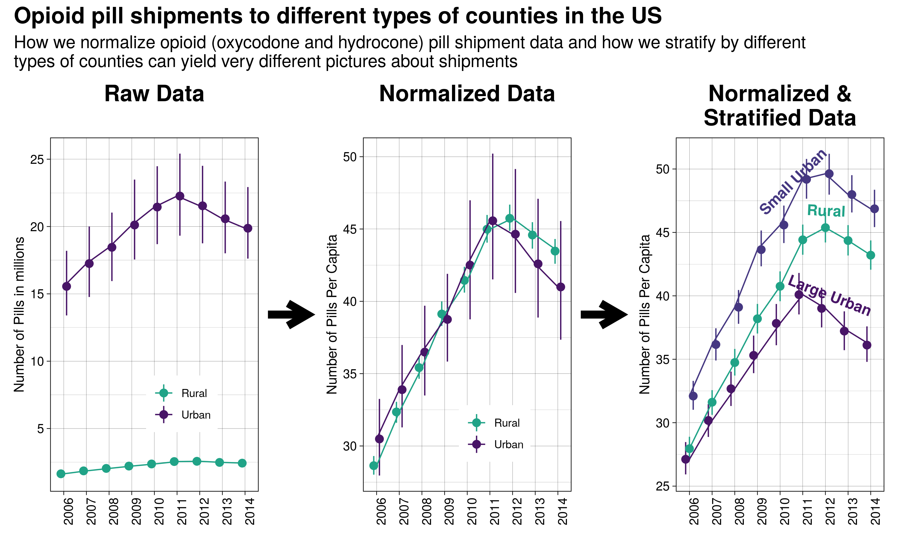
Disclaimer: The purpose of the Open Case Studies project is to demonstrate the use of various data science methods, tools, and software in the context of messy, real-world data. A given case study does not cover all aspects of the research process, is not claiming to be the most appropriate way to analyze a given data set, and should not be used in the context of making policy decisions without external consultation from scientific experts.
This work is licensed under the Creative Commons Attribution-NonCommercial 3.0 (CC BY-NC 3.0) United States License.
To cite this case study please use:
Wright, Carrie and Wang, Kexin and Meng, Qier and Jager, Leah and Taub, Margaret and Hicks, Stephanie. (2020). https://github.com/opencasestudies/ocs-bp-opioid-rural-urban Opioids in the United States (Version v1.0.0).
To access the GitHub Repository for this case study see here: https://github.com/opencasestudies/ocs-bp-opioid-rural-urban/
You may also access and download the data using our
OCSdata package. To learn more about this package including
examples, see this link. Here is how
you would install this package:
This case study is part of a series of public health case studies for the Bloomberg American Health Initiative.
The total reading time for this case study is calculated via koRpus and shown below:
Reading-time metrics are unavailable because the optional `wordcountaddin` and `read.so` packages are not installed.\nReadability Score:
A readability index estimates the reading difficulty level of a particular text. Flesch-Kincaid, FORCAST, and SMOG are three common readability indices that were calculated for this case study via koRpus. These indices provide an estimation of the minimum reading level required to comprehend this case study by grade and age.
*Readability scores unavailable for documents of this size. Estimated reading level: College/Graduate (based on technical content).*Please help us by filling out our survey.
In this case study we will be examining the number of opioid pills (specifically oxycodone and hydrocodone, as they are the top two most misused opioids) shipped to pharmacies and practitioners at the county-level around the United States (US) from 2006 to 2014.
This data comes from the DEA Automated Reports and Consolidated Ordering System (ARCOS) and was released by the Washington Post after legal action by the owner of the Charleston Gazette-Mail in West Virginia and the Washington Post.
We will investigate how the number of shipped pills has changed across time and between rural and urban counties in the US. This analysis will demonstrate how different regions of the country may have been more at risk for opioid addiction crises due to differing rates of opioid prescription (using the number of pills as a proxy for prescription rates). This will help inform students about how evidence-based intervention decisions are made in this area.
This case study is motivated by this article:
García, M. C. et al. Opioid Prescribing Rates in Nonmetropolitan and Metropolitan Counties Among Primary Care Providers Using an Electronic Health Record System — United States, 2014–2017. MMWR Morb. Mortal. Wkly. Rep. 68, 25–30 (2019). DOI: 10.15585/mmwr.mm6802a1
This article explores rates of opioid prescriptions in rural and urban communities in the United States using the Athenahealth electronic health record (EHR) system for 31,422 primary care providers from January 2014 to March 2017. This data comes from the DEA Automated Reports and Consolidated Ordering System (ARCOS) and was released by the Washington Post after legal action by the owner of the Charleston Gazette-Mail in West Virginia and the Washington Post.
We will investigate how the number of shipped pills has changed across time and between rural and urban counties in the US. This analysis will demonstrate how different regions of the country may have been more at risk for opioid addiction crises due to differing rates of opioid prescription (using the number of pills as a proxy for prescription rates). This will help inform students about how evidence-based intervention decisions are made in this area.
This case study is motivated by this article:
García, M. C. et al. Opioid Prescribing Rates in Nonmetropolitan and Metropolitan Counties Among Primary Care Providers Using an Electronic Health Record System — United States, 2014–2017. MMWR Morb. Mortal. Wkly. Rep. 68, 25–30 (2019). DOI: 10.15585/mmwr.mm6802a1
This article explores rates of opioid prescriptions in rural and urban communities in the United States using the Athenahealth electronic health record (EHR) system for 31,422 primary care providers from January 2014 to March 2017.
The main takeaways from this article were:
Among 70,237 fatal drug overdoses in 2017, prescription opioids were involved in 17,029 (24.2%).
The percentage of patients prescribed an opioid was higher in rural than in urban areas.
Higher opioid prescribing rates put patients at risk for addiction and overdose.
Indeed, this was confirmed by another article, which surveyed people who use heroin in the Survey of Key Informants’ Patients Program and the Researchers and Participants Interacting Directly (RAPID) program.
Cicero, T. J., Ellis, M. S., Surratt, H. L. & Kurtz, S. P. The Changing Face of Heroin Use in the United States: A Retrospective Analysis of the Past 50 Years. JAMA Psychiatry 71, 821 (2014). DOI:10.1001/jamapsychiatry.2014.366
They found that:
Respondents who began using heroin in the 1960s were predominantly young men (82.8%; mean age, 16.5 years) whose first opioid of abuse was heroin (80%).
Meaning that 80% of the people who use heroin who started using heroin in the 1960s, started with heroin directly, while 20% first used another opioid and then became people who use heroin.
However, more recent users were older (mean age, 22.9 years) men and women living in less urban areas (75.2%) who were introduced to opioids through prescription drugs (75.0%).
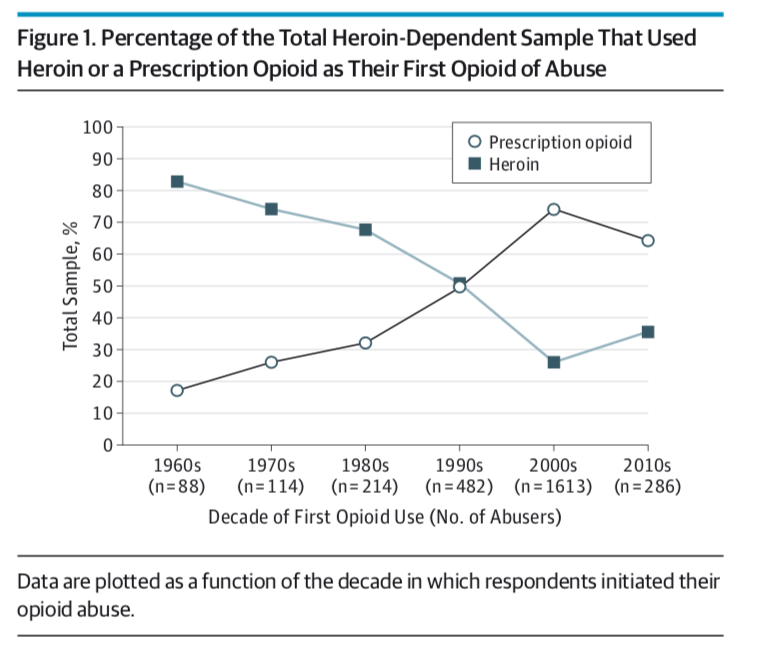
Heroin use has changed from an inner-city, minority-centered problem to one that has a more widespread geographical distribution, involving primarily white men and women in their late 20s living outside of large urban areas.
Photo by James Yarema on Unsplash
A much greater percentage of heroin users completing the survey in the SKIP Program reported currently living in small urban or nonurban areas than in large urban areas (75.2% vs 24.8%) at the time of survey completion.
This survey used self-declared area of current residence (large urban, small urban, suburban, or rural).
Our main question:
How did opioid shipment rates differ between rural and urban regions over time in the US from 2006-2014?
In this case study, we will focus on using packages and functions
from the Tidyverse, such as dplyr,
tidyr. The tidyverse is a library of packages created by
RStudio. While some students may be familiar with previous R programming
packages, these packages make data science in R more legible and
intuitive.

The skills, methods, and concepts that students will be familiar with by the end of this case study are:
Data Science Learning Objectives:
How to join data with dplyr
How to reshape data by pivoting between “long” and “wide” formats
and drop rows with NA values (tidyr)
How to create formatted tables of data with
formattable
How to look for missing data in a dataset
(naniar)
How to create data visualizations with
ggplot2
How to create interactive plots that are difficult to label
because they have many elements (ggiraph)
How to combine individual plots into one figure with
patchwork
Statistical Learning Objectives:
We will begin by loading the packages that we will need:
When this case study renders in a new environment, the following chunk installs any missing packages before they are loaded.
cran_packages <- c(
"naniar", "formattable", "Hmisc", "ggiraph", "patchwork",
"directlabels", "usdata", "OCSdata", "wordcountaddin", "read.so"
)
missing_cran_packages <- cran_packages[!vapply(
cran_packages, requireNamespace, logical(1), quietly = TRUE
)]
if (length(missing_cran_packages) > 0) {
install.packages(missing_cran_packages)
}library(readxl)
library(tibble)
library(httr)
library(jsonlite)
library(stringr)
library(dplyr)
library(tidyr)
library(naniar)
library(ggplot2)
library(formattable)
library(forcats)
library(Hmisc)
library(ggiraph)
library(patchwork)
library(directlabels)
library(usdata)
# if you are not using the OCSdata package to download data you do not need to load it
library(OCSdata)Packages used in this case study:
| Package | Use in this case study |
|---|---|
| readxl | to import an excel file |
| httr | to retrieve data from an API |
| tibble | to create tibbles (the tidyverse version of dataframes) |
| jsonlite | to parse json files |
| stringr | to manipulate character strings within the data (subset and detect parts of strings) |
| dplyr | to filter, subset, join, and modify and summarize the data |
| tidyr | to change the shape or format of tibbles to wide and long |
| naniar | to get a sense of missing data |
| ggplot2 | to create plots |
| formattable | to create a formatted table |
| forcats | to reorder factor for plot |
| Hmisc | to calculate different features about the data |
| ggpol | to create plots that have jitter and half boxplots |
| ggiraph | to create interactive plots |
| patchwork | to combine plots |
| directlabels | to add labels directly on lines within plots |
| usdata | to add full state names to plots based on the state abbreviations |
| OCSdata | to access and download the data used in this case study |
The first time we use a function, we will use the :: to
indicate which package we are using. Unless we have overlapping function
names, this is not necessary, but we will include it here to be
informative about where the functions we will use come from.
| Packages used in this case study: |
| Package | Use in this case study ———- |————- readxl | to import an excel file httr | to retrieve data from an API tibble | to create tibbles (the tidyverse version of dataframes) jsonlite | to parse json files stringr | to manipulate character strings within the data (subset and detect parts of strings) dplyr | to filter, subset, join, and modify and summarize the data tidyr | to change the shape or format of tibbles to wide and long naniar | to get a sense of missing data ggplot2 | to create plots formattable | to create a formatted table forcats | to reorder factor for plot Hmisc | to calculate different features about the data ggpol | to create plots that have jitter and half boxplots ggiraph | to create interactive plots patchwork | to combine plots directlabels | to add labels directly on lines within plots usdata | to add full state names to plots based on the state abbreviations OCSdata | to access and download the data used in this case study |
The first time we use a function, we will use the
:: to indicate which package we are using. Unless we have
overlapping function names, this is not necessary, but we will include
it here to be informative about where the functions we will use come
from. |
| What exactly are opioids? |
| According to the Drug Enforcement Administration (DEA): |
| Opioids (also known as narcotics), describes a class of drugs that contain opium (the poppy plant - Papaver somniferum), are derived from opium, or contain a semi-synthetic or synthetic substitute for opium. |
| Photo by Ingo Doerrie on Unsplash |
However, technically, opioids are substances that
bind to the opioid
receptors in the body, which are involved in the sensation of
pain and the experience of reward.
There are actually opioids that naturally are made by the human body,
the most well known being the endorphins. |
Opioid drugs tend to be addictive because they modulate the reward system. This is the part of the brain that reinforces behaviors (normally these are behaviors such as drinking water or eating food) by causing the experience of pleasure (through the release of a neurotransmitter called dopamine).
This same system can be activated by both opioids that naturally occur in the body, as well as opioid prescription drugs and other addictive drugs. Activation of this system by drug use leads to very high releases of Dopamine and the sensation of pleasure which ultimately leads to reinforced use of that drug.

[source]
In general, opioid drugs have been found to dull the senses, relieve pain, suppress cough, reduce respiration and heart rate, induce constipation, and induce feelings of euphoria. They have a high potential for abuse and addiction.
Drugs within this class include (with prescription drug brand names are shown in parentheses):
Opium comes from the fluid (which is also called poppy tears) inside the seed capsules of the Papaver somniferum plant. This contains morphine, codeine, and thebaine. This is then dried.
Opium has been used by humans since 5000 BCE and it has been used across the world. See here for an interesting overview of the history.
Opium derived medications were historically used in United States to treat a variety of ailments besides pain including: cholera, dysentery, tuberculosis, and mental illness.
Of note, they state that “from 1898 to 1910 heroin was marketed as a non-addictive morphine substitute and cough medicine for children”!
Here you can see a photo of a bottle of heroin:

[source]
Opioids have continued to be used in the treatment of pain.
The rate of opioid overdose deaths rapidly increased in the US in the 1990s.
According to the US department of health and human services (HHS):
In the late 1990s, pharmaceutical companies reassured the medical community that patients would not become addicted to opioid pain relievers and healthcare providers began to prescribe them at greater rates.
Increased prescription of opioid medications led to widespread misuse of both prescription and non-prescription opioids before it became clear that these medications could indeed be highly addictive.
In 2017 the HHS declared a public health emergency
See here for a time line of the epidemic in the US and here for more details about the epidemic.
According to this article from the Morbidity and Mortality Weekly Report (MMWR) of the Centers for Disease Control and Prevention (CDC):
Drug overdose is the leading cause of unintentional injury-associated death in the United States.
You can see that most recent overdose deaths were due to the use of synthetic opioids, where as previous high levels of overdoses (till about 2015) were attributable to natural and semi-synthetic opioids (which is what we will look at in this case study).
They state that:
From 1999–2018, almost 450,000 people died from an overdose involving any opioid, including prescription and illicit opioids.
Importantly rates appear to differ across states, according to this CDC report

According to the motivating report for our case study:
Prescription rates are now declining, however, prescription of opioids was found to be higher in rural areas rather than urban ares.
It is important to identify locations where people are particularly vulnerable to target interventions for communities that need it the most.
There are some important considerations regarding this data analysis to keep in mind:
According to the Washington Post database, they state about the DEA data:
[Washington Post]… cleaned the data to include only information on shipments of oxycodone and hydrocodone pills. We did not include data on 10 other opioids because they were shipped in much lower quantities…
“It’s important to remember that the number of pills in each county does not necessarily mean those pills went to people who live in that county. The data only shows us what pharmacies the pills are shipped to and nothing else.”
Furthermore, we will define counties as being rural or urban however there can be great variation within a county and we used land area values from only 2010 even though these can fluctuate. Therefore, the way we categorized counties should be seen as an approximation. Additionally, other aspects about a county besides population level and density can be influential for creating an environment that would increase the vulnerability of community members to drug abuse and addiction. These include socioeconomic factors among others.
Finally, overdose deaths are often due to the use of multiple substances. Simply because a county received more pills does not mean that people in that county would experience more drug overdoses. It is also important to remember that prescription opioids only account for a portion of the drug overdose deaths reported in this time period. However, according to this article, 75% of people who use heroin surveyed were introduced to opioids through prescription drug use.
The recent overdose deaths in the US opioid crisis are mostly due to synthetic opioids. Understanding what makes communities vulnerable to these types of opioids is an area of active research but not a focus of this case study.
We will use data from two sources: See here for more details about how this database was released.
This data was part of the Automated Reports and Consolidated Ordering System (ARCOS) of the DEA in which:
manufacturers and distributors report their controlled substances transactions
Their website indicates that:
The Controlled Substances Act of 1970 created the requirement for Manufacturers and Distributors to report their controlled substances transactions to the Attorney General. The Attorney General delegates this authority to the Drug Enforcement Administration (DEA).
The US census for land area of counties to allow us to estimate county-level population density. This was obtained from here and contains county, state, and national land area estimates (for a few years in a few different ways, we will explain more about that later).
The Washington Post data from the Drug Enforcement Administration (DEA) about opioid (oxycodone and hydrocodone) pill shipments to pharmacies and practitioners around the US at the county-level from 2006 to 2014.
This second dataset was released in July of 2019 and has been controversial as according to the Washington Post:
The disclosure is part of a civil action brought by 2,500 cities, towns, counties and tribal nations alleging that nearly two dozen drug companies conspired to saturate the nation with opioids.
See here for more details about how this database was released.
This data was part of the Automated Reports and Consolidated Ordering System (ARCOS) of the DEA in which:
manufacturers and distributors report their controlled substances transactions
Their website indicates that:
The Controlled Substances Act of 1970 created the requirement for Manufacturers and Distributors to report their controlled substances transactions to the Attorney General. The Attorney General delegates this authority to the Drug Enforcement Administration (DEA).
ARCOS is an automated, comprehensive drug reporting system which monitors the flow of DEA controlled substances from their point of manufacture through commercial distribution channels to point of sale or distribution at the dispensing/retail level - hospitals, retail pharmacies, practitioners, mid-level practitioners, and teaching institutions. Included in the list of controlled substance transactions tracked by ARCOS are the following: All Schedules I and II materials (manufacturers and distributors); Schedule III narcotic and gamma-hydroxybutyric acid (GHB) materials (manufacturers and distributors); and selected Schedule III and IV psychotropic drugs (manufacturers only).
The annual report about the data from 2019, can be found here.
As this is a very large dataset, thus the Washington Post created an application programming interface (API) to make it easier for users to access the data.
An API is a computational interface that simplifies interactions with a data or file system for a user. It is similar to a Graphical User Interface (GUI), yet it allows the user some more flexibility/functionality.
This YouTube video gives an overview of what an API is.
There was also an R package on cran called arcos for interacting with the API, but this has been archived. This package is however still available here on GitHub.
See here for more information about how to get access the Washington Post DEA database.
Importantly, the API also includes population estimates for the years (2006 to 2014) and counties within the DEA database.
For the purposes of this case study, we have saved files after
getting the data from the API that you may import into your R
environment using the OCSdata package and the
load() function:
# install.packages("OCSdata")
# library(OCSdata)
imported_data("ocs-bp-opioid-rural-urban", outpath = getwd())
load(here::here("data", "imported", "land_area.rda"))
load(here::here("data", "imported", "county_pop_arcos.rda"))
load(here::here("data", "imported", "county_annual.rda"))You may also obtain these files from the data/imported
directory of our GitHub
repository.
We will need county land area data for our calculations of population density.
We obtained county land area data from the US census Bureau at this link.
This data contains land areas (in a few different ways for a number of years) at the national, state, and county level.
This link explains how the data is formatted.
Based on this we determined that we want to use the
LND110210D column which is the data from the year 2010.
Let’s break this down to understand the meaning of the column.
We will use the read_excel() function of the
readxl package to import the data. We will also convert the
data into a tibble (which is
a the tidyverse version of a data frame) by using the
as_tibble() function of the tibble
package.
If you did not clone our github repository or do not have this data
already, you may download this data using the OCSdata
package:
# install.packages("OCSdata")
# library(OCSdata)
raw_data("ocs-bp-opioid-rural-urban", outpath = getwd())
# This function creates a "OCSdata" sub-directory in your current working directory.
# It also creates a "raw" sub-directory within "data" which contains the .xls file.In our case, we downloaded this data and put it within a “raw”
subdirectory of a “data” directory for our project. If you use an
RStudio project, then you can use the here() function of
the here package to make the path for importing this data
simpler. The here package automatically starts looking for
files based on where you have a .Rproj file which is
created when you start a new RStudio project. We can specify that we
want to look for the “LND01.xls” file within the “raw” directory within
the “data” directory where our .Rproj file is located by
separating the names of these directories using commas and listing
“data” first.
You can create a project by going to the File menu of RStudio like so:

You can also do so by clicking the project button:

See here to learn more about using RStudio projects.
We can take a look at the data using the base head()
function which will show the first 3 rows.
# A tibble: 3 × 34
Areaname STCOU LND010190F LND010190D LND010190N1 LND010190N2 LND010200F
<chr> <chr> <dbl> <dbl> <chr> <chr> <dbl>
1 UNITED STATES 00000 0 3787425. 0000 0000 0
2 ALABAMA 01000 0 52423. 0000 0000 0
3 Autauga, AL 01001 0 604. 0000 0000 0
# ℹ 27 more variables: LND010200D <dbl>, LND010200N1 <chr>, LND010200N2 <chr>,
# LND110180F <dbl>, LND110180D <dbl>, LND110180N1 <chr>, LND110180N2 <chr>,
# LND110190F <dbl>, LND110190D <dbl>, LND110190N1 <chr>, LND110190N2 <chr>,
# LND110200F <dbl>, LND110200D <dbl>, LND110200N1 <chr>, LND110200N2 <chr>,
# LND110210F <dbl>, LND110210D <dbl>, LND110210N1 <chr>, LND110210N2 <chr>,
# LND210190F <dbl>, LND210190D <dbl>, LND210190N1 <chr>, LND210190N2 <chr>,
# LND210200F <dbl>, LND210200D <dbl>, LND210200N1 <chr>, LND210200N2 <chr>Indeed, this looks as expected with both the US, state, and county level land areas. We will look into this further in later sections.
Looks good!
Now we will save our data in the data directory within a subdirectory called “imported”:
Note: The ARCOS API referenced in this section is no longer publicly available. However, we’ve included this information for reference to demonstrate how APIs work. For this case study, we’ll be using pre-downloaded data files instead.
The httr package creates what are called “GET requests”
so that we can make these requests inside of R. This allows for the data
to be retrieved from the API within R.
The ARCOS API is publicly documented by the arcos
package. The examples below use its documented WaPo
key; the rendered case study uses a bundled data snapshot so it does not
depend on an external service.
APIs typically require a password or key to gain access or
authenticate your data request. The httr package helps to
authenticate your data request. Often these keys are something that you
do not want to share, unless the API is public.
We are interested in the county level data. The original API included county-level population data (the number of people per county in each state in the US from 2006 to 2014).
The following steps show how you would typically use a public API (though we won’t be able to execute these steps since the API is no longer available):
GET button on the API.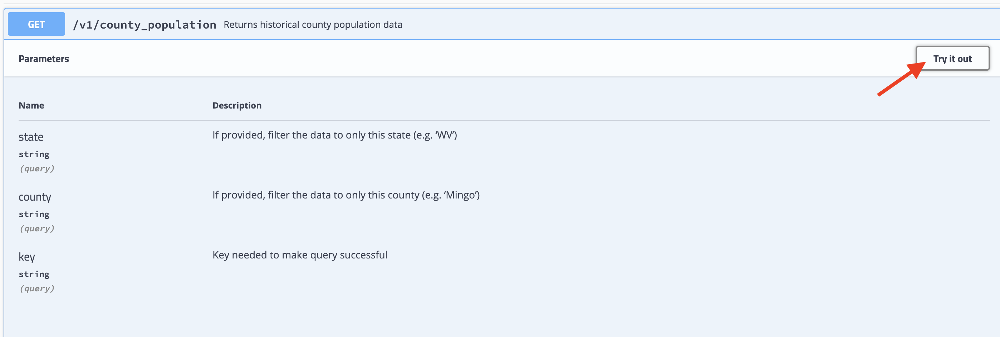
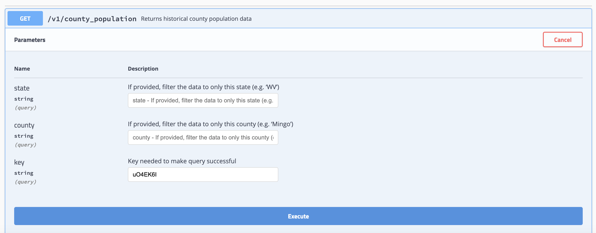
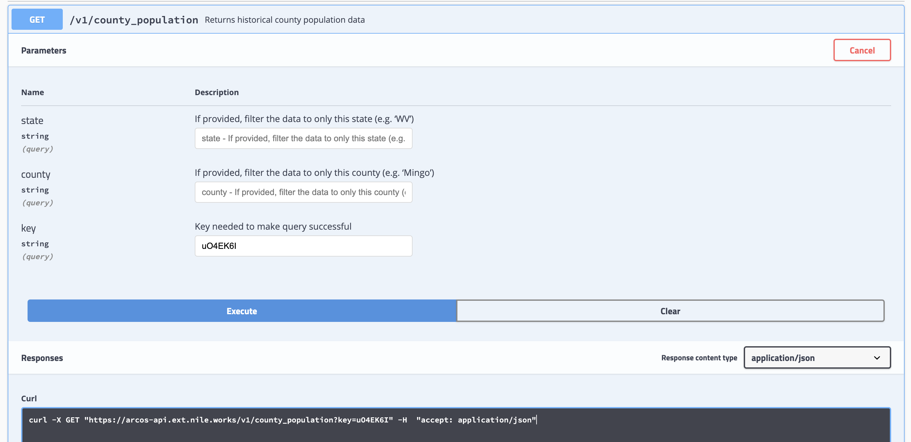
The original ARCOS API used in this case study is no longer
available. The maintained arcos package documents the
current API in its documentation.
Because the service is external and can be temporarily unavailable, the
website renders from a bundled snapshot of the API response. You can
still use the following request code interactively when the service is
available:
curl -X GET "https://ne.washingtonpost.com/arcos/v1/county_population?key=WaPo" -H "accept: application/json"
count_url <- "https://ne.washingtonpost.com/arcos/v1/county_population?key=WaPo"
county_pop_json <-
httr::GET(url = count_url)If we needed to specify a username and password, we would do so using
the authenticate() function of the httr
package within the GET function. The
authenticate() function takes user,
password and type arguments.
Here is an example:
GET(url = "https://example.com",
authenticate(user = "username",
password = "password",
type = "basic"))The default authentication request type is "basic" and
typically what is needed.
After using the GET function, we would have examined
what the data looked like.
When run interactively, county_pop_json is a
json object. A JavaScript
Object Notation (JSON) object (or file format) is lightweight
meaning that it does not take up much memory and they are human readable
files to make transmitting data from websites easier.
You will also see that the Status is 200,
which means that the data were retrieved from the API.
We would then use the content() function of the
httr package to extract the text from the file:
This would be a very large string at this point. We could take a look
at part of it by using the str_sub() function of the
stringr package. In this case we would only look at the
first 400 characters.
What is a string or a character?
There are several classes of data in R programming. Character is one
of these classes. A character string is an individual data value made up
of characters. This can be a paragraph, like the legend for the table,
or it can be a single letter or number like the letter "a"
or the number "3".
If data are of class character, than the numeric values will not be processed like a numeric value in a mathematical sense.
To get the data into a more readable format, we would use the
fromJSON() function of the jsonlite package
and again create a tibble of the data using as_tibble()
county_pop <-
jsonlite::fromJSON(county_pop_text,
flatten = TRUE)
county_pop <- as_tibble(county_pop)For the rendered case study, load the bundled snapshot in place of the live response:
We can use the glimpse() function and the
distinct() function of the dplyr package to
get a better sense of the data. The distinct() function
allows us to take a look at the unique values of the year
variable.
The data would have included the full range from 2006-2014.
Since the API is no longer available, we’ll load the county population data from a file that was previously downloaded:
We are also interested in the number of opioid pills shipped at the county level.
curl -X GET "https://ne.washingtonpost.com/arcos/v1/combined_county_annual?key=WaPo"
-H "accept: application/json"or in R, the URL would have been:
Question Opportunity
If the API were still available, how would you modify the import code based on what you learned from the population data example?
Instead, we will load this data from the pre-downloaded file:
Now let’s take a look at the data:
Rows: 27,758
Columns: 6
$ BUYER_COUNTY <chr> "ABBEVILLE", "ABBEVILLE", "ABBEVILLE", "ABBEVILLE", "ABBE…
$ BUYER_STATE <chr> "SC", "SC", "SC", "SC", "SC", "SC", "SC", "SC", "SC", "LA…
$ year <int> 2006, 2007, 2008, 2009, 2010, 2011, 2012, 2013, 2014, 200…
$ count <int> 877, 908, 871, 930, 1197, 1327, 1509, 1572, 1558, 5802, 5…
$ DOSAGE_UNIT <dbl> 363620, 402940, 424590, 467230, 539280, 566560, 589010, 5…
$ countyfips <chr> "45001", "45001", "45001", "45001", "45001", "45001", "45…# A tibble: 9 × 1
year
<int>
1 2006
2 2007
3 2008
4 2009
5 2010
6 2011
7 2012
8 2013
9 2014The data includes the same years as the population data (2006-2014).
If you have been following along but stopped, we could load our imported data from the “data” directory like so:
load(here::here("data", "imported", "land_area.rda"))
load(here::here("data", "imported", "county_pop_arcos.rda"))
load(here::here("data", "imported", "county_annual.rda"))First you need to install and load the OCSdata
package:
Then, you may load the imported data into your R environment using the following code:
imported_data("ocs-bp-opioid-rural-urban", outpath = getwd())
load(here::here("data", "imported", "land_area.rda"))
load(here::here("data", "imported", "county_pop_arcos.rda"))
load(here::here("data", "imported", "county_annual.rda"))Alternatively, you may download the raw data as well as the CSV files for simpler import using the following function:
If the package does not work for you, the RDA files (stands for R
data) of the data can be found in our GitHub
repository. Download these files and then place them in your current
working directory within a subdirectory called “imported” within a
subdirectory called “data” to copy and paste our code. We used an
RStudio project and the here
package to navigate to the files more easily.
load(here::here("data", "imported", "land_area.rda"))
load(here::here("data", "imported", "county_pop_arcos.rda"))
load(here::here("data", "imported", "county_annual.rda"))You can create a project by going to the File menu of RStudio like so:
You can also do so by clicking the project button:
See here
to learn more about using RStudio projects and here to learn more about
the here package.
Now let’s take a deeper look at the data to see if we have any
missing data using the naniar package.
We can use the vis_miss() function to create a plot of
missing data, which will use a heatmap to show if there are missing data
(black) or no missing data (gray).
Let’s start with the land area data.
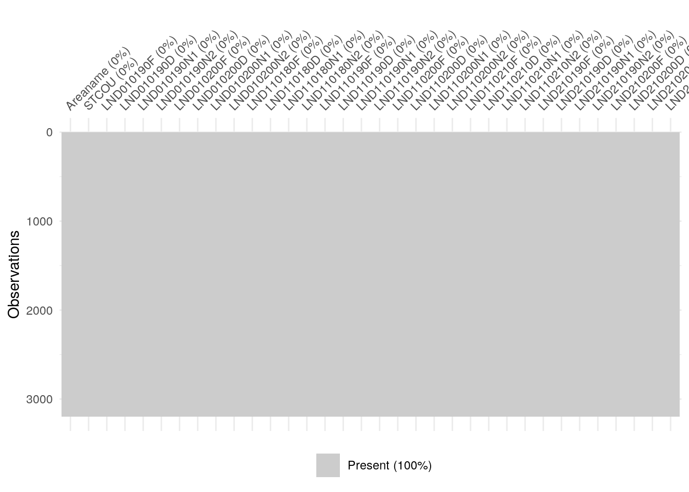
Looks like there is no missing data.
How about the population data:
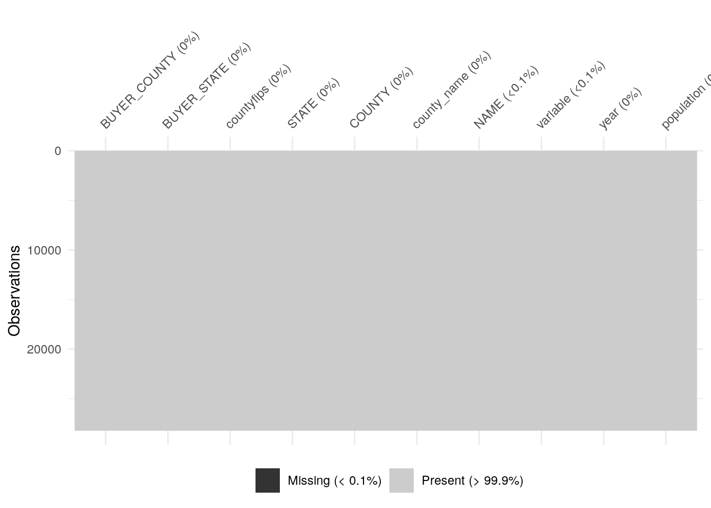
Although it is very hard to see in the figure, we appear to be
missing some values for the NAME and variable
data, but we do not intend to use these, so this should be OK. It is
however a good idea to check these rows to see if anything strange is
happening.
Let’s use the filter() function of the
dplyr package and the is.na() base function to
see more about the data that does not have NAME values.
We will also start using the %>% pipe of the
dplyr package for our assignments.
%>% operator
By piping we mean using the %>% pipe
operator which is accessible after loading the tidyverse or
several of the packages within the tidyverse like dplyr.
This allows us to perform multiple sequential steps on one data
input.
# A tibble: 15 × 10
BUYER_COUNTY BUYER_STATE countyfips STATE COUNTY county_name NAME variable
<chr> <chr> <chr> <int> <int> <chr> <chr> <chr>
1 PRINCE OF WAL… AK 02198 2 201 Prince of … <NA> <NA>
2 SKAGWAY HOONA… AK 02232 2 232 Skagway Ho… <NA> <NA>
3 WRANGELL AK 02275 2 280 Wrangell <NA> <NA>
4 PRINCE OF WAL… AK 02198 2 201 Prince of … <NA> <NA>
5 SKAGWAY HOONA… AK 02232 2 232 Skagway Ho… <NA> <NA>
6 WRANGELL AK 02275 2 280 Wrangell <NA> <NA>
7 PRINCE OF WAL… AK 02198 2 201 Prince of … <NA> <NA>
8 SKAGWAY HOONA… AK 02232 2 232 Skagway Ho… <NA> <NA>
9 WRANGELL AK 02275 2 280 Wrangell <NA> <NA>
10 SKAGWAY HOONA… AK 02232 2 232 Skagway Ho… <NA> <NA>
11 SKAGWAY HOONA… AK 02232 2 232 Skagway Ho… <NA> <NA>
12 SKAGWAY HOONA… AK 02232 2 232 Skagway Ho… <NA> <NA>
13 SKAGWAY HOONA… AK 02232 2 232 Skagway Ho… <NA> <NA>
14 SKAGWAY HOONA… AK 02232 2 232 Skagway Ho… <NA> <NA>
15 SKAGWAY HOONA… AK 02232 2 232 Skagway Ho… <NA> <NA>
# ℹ 2 more variables: year <int>, population <int>This looks OK. Let’s move on to the annualDosage
data.
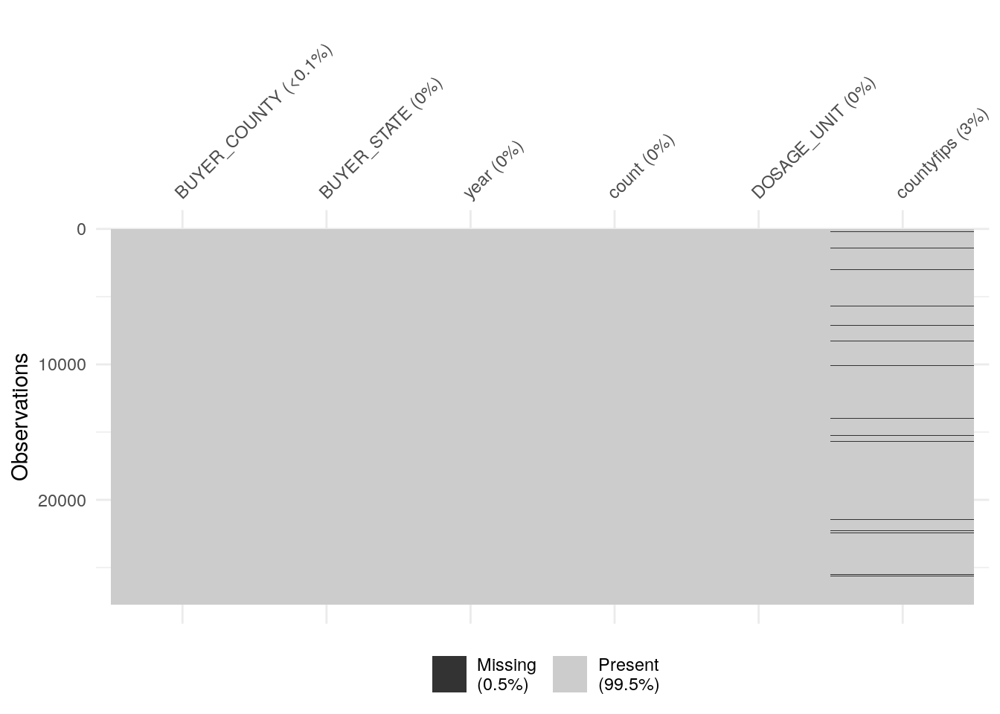
Interesting, we appear to be missing countyfips codes
(recall that FIPS stands for the Federal
Information Processing Standards (FIPS) code) for a small percentage
of our annual data.
Let’s take a look at this data:
# A tibble: 760 × 6
BUYER_COUNTY BUYER_STATE year count DOSAGE_UNIT countyfips
<chr> <chr> <int> <int> <dbl> <chr>
1 ADJUNTAS PR 2006 147 102800 <NA>
2 ADJUNTAS PR 2007 153 104800 <NA>
3 ADJUNTAS PR 2008 153 45400 <NA>
4 ADJUNTAS PR 2009 184 54200 <NA>
5 ADJUNTAS PR 2010 190 56200 <NA>
6 ADJUNTAS PR 2011 186 65530 <NA>
7 ADJUNTAS PR 2012 138 57330 <NA>
8 ADJUNTAS PR 2013 138 65820 <NA>
9 ADJUNTAS PR 2014 90 59490 <NA>
10 AGUADA PR 2006 160 49200 <NA>
# ℹ 750 more rowsWe can see that the first rows with missing data for
countyfips is data for Puerto Rico - it might make sense
for Puerto Rico to be missing these codes.
Let’s see if there are any data other than data for Puerto Rico that
is also missing countyfips values. We can use the
!= operator which indicates not equal to.
# A tibble: 74 × 6
BUYER_COUNTY BUYER_STATE year count DOSAGE_UNIT countyfips
<chr> <chr> <int> <int> <dbl> <chr>
1 GUAM GU 2006 319 265348 <NA>
2 GUAM GU 2007 330 275600 <NA>
3 GUAM GU 2008 313 286900 <NA>
4 GUAM GU 2009 390 355300 <NA>
5 GUAM GU 2010 510 413800 <NA>
6 GUAM GU 2011 559 475600 <NA>
7 GUAM GU 2012 616 564800 <NA>
8 GUAM GU 2013 728 623200 <NA>
9 GUAM GU 2014 712 558960 <NA>
10 MONTGOMERY AR 2006 469 175390 <NA>
11 MONTGOMERY AR 2007 597 241270 <NA>
12 MONTGOMERY AR 2008 561 251760 <NA>
13 MONTGOMERY AR 2009 554 244160 <NA>
14 MONTGOMERY AR 2010 449 247990 <NA>
15 MONTGOMERY AR 2011 560 313800 <NA>
16 MONTGOMERY AR 2012 696 339520 <NA>
17 MONTGOMERY AR 2013 703 382300 <NA>
18 MONTGOMERY AR 2014 491 396900 <NA>
19 NORTHERN MARIANA ISLANDS MP 2006 165 117850 <NA>
20 NORTHERN MARIANA ISLANDS MP 2007 157 117500 <NA>
21 NORTHERN MARIANA ISLANDS MP 2008 204 143000 <NA>
22 NORTHERN MARIANA ISLANDS MP 2009 269 186900 <NA>
23 NORTHERN MARIANA ISLANDS MP 2010 231 196360 <NA>
24 NORTHERN MARIANA ISLANDS MP 2011 264 208500 <NA>
25 NORTHERN MARIANA ISLANDS MP 2012 290 217400 <NA>
26 NORTHERN MARIANA ISLANDS MP 2013 258 231400 <NA>
27 NORTHERN MARIANA ISLANDS MP 2014 260 239200 <NA>
28 PALAU PW 2006 5 14000 <NA>
29 PALAU PW 2007 9 26600 <NA>
30 PALAU PW 2008 2 7500 <NA>
31 PALAU PW 2009 3 10000 <NA>
32 PALAU PW 2013 1 1000 <NA>
33 SAINT CROIX VI 2006 544 198800 <NA>
34 SAINT CROIX VI 2007 612 237120 <NA>
35 SAINT CROIX VI 2008 694 254020 <NA>
36 SAINT CROIX VI 2009 601 233860 <NA>
37 SAINT CROIX VI 2010 764 316260 <NA>
38 SAINT CROIX VI 2011 756 320850 <NA>
39 SAINT CROIX VI 2012 755 314690 <NA>
40 SAINT CROIX VI 2013 802 328410 <NA>
41 SAINT CROIX VI 2014 684 269040 <NA>
42 SAINT JOHN VI 2006 65 22200 <NA>
43 SAINT JOHN VI 2007 60 21800 <NA>
44 SAINT JOHN VI 2008 70 24700 <NA>
45 SAINT JOHN VI 2009 58 23100 <NA>
46 SAINT JOHN VI 2010 75 23500 <NA>
47 SAINT JOHN VI 2011 89 30200 <NA>
48 SAINT JOHN VI 2012 85 30200 <NA>
49 SAINT JOHN VI 2013 66 22000 <NA>
50 SAINT JOHN VI 2014 63 20400 <NA>
51 SAINT THOMAS VI 2006 628 219100 <NA>
52 SAINT THOMAS VI 2007 757 249480 <NA>
53 SAINT THOMAS VI 2008 815 294250 <NA>
54 SAINT THOMAS VI 2009 798 313200 <NA>
55 SAINT THOMAS VI 2010 802 318630 <NA>
56 SAINT THOMAS VI 2011 932 383350 <NA>
57 SAINT THOMAS VI 2012 939 373280 <NA>
58 SAINT THOMAS VI 2013 988 376400 <NA>
59 SAINT THOMAS VI 2014 1021 314440 <NA>
60 <NA> AE 2006 2 330 <NA>
61 <NA> CA 2006 47 12600 <NA>
62 <NA> CT 2006 305 78700 <NA>
63 <NA> CT 2007 112 30900 <NA>
64 <NA> CT 2008 48 15000 <NA>
65 <NA> FL 2006 9 900 <NA>
66 <NA> FL 2007 7 700 <NA>
67 <NA> GA 2006 114 51700 <NA>
68 <NA> IA 2006 7 2300 <NA>
69 <NA> IN 2006 292 39300 <NA>
70 <NA> MA 2006 247 114900 <NA>
71 <NA> NV 2006 380 173600 <NA>
72 <NA> NV 2007 447 200600 <NA>
73 <NA> NV 2008 5 2200 <NA>
74 <NA> OH 2006 23 5100 <NA> It looks like there is also data for other territories in the dataset, as well as some counties with no name.
For some reason the rows for the Montgomery county of Arkansas are
also missing a countyfips value.
# A tibble: 9 × 6
BUYER_COUNTY BUYER_STATE year count DOSAGE_UNIT countyfips
<chr> <chr> <int> <int> <dbl> <chr>
1 MONTGOMERY AR 2006 469 175390 <NA>
2 MONTGOMERY AR 2007 597 241270 <NA>
3 MONTGOMERY AR 2008 561 251760 <NA>
4 MONTGOMERY AR 2009 554 244160 <NA>
5 MONTGOMERY AR 2010 449 247990 <NA>
6 MONTGOMERY AR 2011 560 313800 <NA>
7 MONTGOMERY AR 2012 696 339520 <NA>
8 MONTGOMERY AR 2013 703 382300 <NA>
9 MONTGOMERY AR 2014 491 396900 <NA> According to this website the FIPS code is 05097.
We will update these values in the next section.
If you have been following along but stopped, we could load our imported data from the “data” directory like so:
load(here::here("data", "imported", "land_area.rda"))
load(here::here("data", "imported", "county_pop_arcos.rda"))
load(here::here("data", "imported", "county_annual.rda"))First you need to install and load the OCSdata
package:
Then, you may load the imported data into your R environment using the following code:
imported_data("ocs-bp-opioid-rural-urban", outpath = getwd())
load(here::here("OCSdata", "data", "imported", "land_area.rda"))
load(here::here("OCSdata", "data", "imported", "county_pop_arcos.rda"))
load(here::here("OCSdata", "data", "imported", "county_annual.rda"))Alternatively, you may download the raw data as well as the CSV files for simpler import using the following function:
If the package does not work for you, the RDA files (stands for R
data) of the data can be found in our GitHub
repository. Download these files and then place them in your current
working directory within a subdirectory called “imported” within a
subdirectory called “data” to copy and paste our code. We used an
RStudio project and the here
package to navigate to the files more easily.
load(here::here("data", "imported", "land_area.rda"))
load(here::here("data", "imported", "county_pop_arcos.rda"))
load(here::here("data", "imported", "county_annual.rda"))You can create a project by going to the File menu of RStudio like so:
You can also do so by clicking the project button:
See here
to learn more about using RStudio projects and here to learn more about
the here package.
Recall that we want to use the LND110210D column which
is the data from the year 2010.
This link and this link explain what each of the column names indicate.
Using these we see that our column of interest
LND110210D stands for: - LND = Area - 110 = Land Area in
square miles (subgroup code of the group) - 2 = century - 10 = year code
- 2010 (based on the century) - D = Data (data type: F = flag, D = data
value, N1 = Footnote 1, N2 = Footnote 2)
The 010 subgroup code indicates total area (including land and
water).
The 210 subgroup code indicates water area.
LND010190D Total area in square miles 1990
LND010200D Total area in square miles 2000
LND110180D Land area in square miles 1980
LND110190D Land area in square miles 1990
LND110200D Land area in square miles 2000
LND110210D Land area in square miles 2010
LND210190D Water area in square miles 1990
LND210200D Water area in square miles 2000
We also want to be able to identify what land area is for what
county, thus we will also keep the the column with area names as well as
the column called STCOU. This variable contains numeric
codes that are used to identify states and counties called Federal
Information Processing Standards (FIPS). In this dataset we have
national state, and county codes, so this variable is called
STCOU (short for State and County).
We can select just the names, the county/state numeric codes
(STCOU), and the LND110210D column by using
the select() function of the dplyr
package.
# A tibble: 3,198 × 3
Areaname STCOU LND110210D
<chr> <chr> <dbl>
1 UNITED STATES 00000 3531905.
2 ALABAMA 01000 50645.
3 Autauga, AL 01001 594.
4 Baldwin, AL 01003 1590.
5 Barbour, AL 01005 885.
6 Bibb, AL 01007 623.
7 Blount, AL 01009 645.
8 Bullock, AL 01011 623.
9 Butler, AL 01013 777.
10 Calhoun, AL 01015 606.
# ℹ 3,188 more rowsThus, we still have state-level and full US measurements of land area in addition to the county data. But we will join this with our other datasets in a bit based on the county name/county FIPS code and thus only keep the county level data.
countyfipsWe will use the case_when() function of the
dplyr package recode the NA values for
countyfips for the rows for the MONGOMERY
county of AR to be 05097.
First, we need to identify these particular rows. Because Montgomery
may be a county name in other states, we need to evaluate when the
BUYER_STATE is AR and when the
BUYER_COUNTY is MONTGOMERY. We will use the
& operator to indicate that both conditions must be
true.
Then, We will recode the coutryfips values for these
rows to be "05097" using the ~ symbol. All
other values need to stay the same.
We need to use TRUE ~ to recode all the other
countyfips values to what they currently are. Otherwise
these would automatically be set to NA.
We are going to use the %>% pipe operator to use the
annualDosage as our input and perform subsequent steps to
create an updates version of the tibble.
annualDosage <- annualDosage %>%
mutate(countyfips = case_when(BUYER_STATE == "AR" &
BUYER_COUNTY == "MONTGOMERY" ~ as.character("05097"),
TRUE ~ countyfips))Now we can check that we indeed fixed our data.
# A tibble: 0 × 6
# ℹ 6 variables: BUYER_COUNTY <chr>, BUYER_STATE <chr>, year <int>,
# count <int>, DOSAGE_UNIT <dbl>, countyfips <chr># A tibble: 9 × 6
BUYER_COUNTY BUYER_STATE year count DOSAGE_UNIT countyfips
<chr> <chr> <int> <int> <dbl> <chr>
1 MONTGOMERY AR 2006 469 175390 05097
2 MONTGOMERY AR 2007 597 241270 05097
3 MONTGOMERY AR 2008 561 251760 05097
4 MONTGOMERY AR 2009 554 244160 05097
5 MONTGOMERY AR 2010 449 247990 05097
6 MONTGOMERY AR 2011 560 313800 05097
7 MONTGOMERY AR 2012 696 339520 05097
8 MONTGOMERY AR 2013 703 382300 05097
9 MONTGOMERY AR 2014 491 396900 05097 Great! We fixed it.
OK, we also had some rows that did not have county names because they were just missing or the data was for US territories. We will remove the values that do not have county names.
First, let’s take a look at them again.
# A tibble: 17 × 6
BUYER_COUNTY BUYER_STATE year count DOSAGE_UNIT countyfips
<chr> <chr> <int> <int> <dbl> <chr>
1 <NA> AE 2006 2 330 <NA>
2 <NA> CA 2006 47 12600 <NA>
3 <NA> CT 2006 305 78700 <NA>
4 <NA> CT 2007 112 30900 <NA>
5 <NA> CT 2008 48 15000 <NA>
6 <NA> FL 2006 9 900 <NA>
7 <NA> FL 2007 7 700 <NA>
8 <NA> GA 2006 114 51700 <NA>
9 <NA> IA 2006 7 2300 <NA>
10 <NA> IN 2006 292 39300 <NA>
11 <NA> MA 2006 247 114900 <NA>
12 <NA> NV 2006 380 173600 <NA>
13 <NA> NV 2007 447 200600 <NA>
14 <NA> NV 2008 5 2200 <NA>
15 <NA> OH 2006 23 5100 <NA>
16 <NA> PR 2006 10 17800 <NA>
17 <NA> PR 2007 2 1300 <NA> We can remove these rows from our data set using the
filter() command along with the ! (exclamation
point) before the is.na() function.
Now let’s check that these NA values are gone:
# A tibble: 0 × 6
# ℹ 6 variables: BUYER_COUNTY <chr>, BUYER_STATE <chr>, year <int>,
# count <int>, DOSAGE_UNIT <dbl>, countyfips <chr>As we have seen, our annualDosage object has data for US
territories. So let’s check to see if our land area data also has
information for US territories, which would allow us to investigate them
as well, a potentially interesting addition to our analysis. If not, we
will remove the data for the territories in our
annualDosage data.
As a first case, we can use the str_detect() function of
the stringr package, which contains lots of functions for
looking for patterns in character strings, to look for data from Puerto
Rico.
The str_detect() function allows us to look for a
particular pattern. It does not have to be the full value, i.e., a
partial match is allowed. We can look to see if there are any
PR strings within the values of the the
Areaname variable.
# A tibble: 0 × 3
# ℹ 3 variables: Areaname <chr>, STCOU <chr>, LND110210D <dbl>It does not look as if there are any entries for Puerto Rico, but let’s check our code. You can see using a different abbreviation, that this code works as intended:
# A tibble: 81 × 3
Areaname STCOU LND110210D
<chr> <chr> <dbl>
1 ARIZONA 04000 113594.
2 ARKANSAS 05000 52035.
3 Arkansas, AR 05001 989.
4 Ashley, AR 05003 925.
5 Baxter, AR 05005 554.
6 Benton, AR 05007 847.
7 Boone, AR 05009 590.
8 Bradley, AR 05011 649.
9 Calhoun, AR 05013 629.
10 Carroll, AR 05015 630.
# ℹ 71 more rowsOK, so it does not look like there is any territory land area data in
this dataset. Thus, we will also remove these from the
annualDosage tibble.
Question Opportunity
Do you recall how to do this?
Defining if a region is rural or urban is actually quite complicated as the overall population, the structure of our towns and cities, and the access between different locations all change over time. Please see this report form the US Census Bureau about the history of this definition.
According to several definitions - urban areas are often defined as those with greater than 50,000 people. However, there are also definitions of rural areas being based on “population densities of less than 500 people per square mile and places with fewer than 2,500 people”. Typically counties are made up of multiple areas, making it complicated to assign a single “rural” or “urban” label at the county level.
The census re-defines rural and urban areas around the US relatively often. However, census collections about these measurements do not occur every year.
We will define a county as rural or urban based on the population density following the USDA definition that we described above:
Ideally, we would want land area from each year, as these do fluctuate a bit, however, the 2010 data should be a decent approximation as 2010 is in the middle of our time span.
We will calculate the density as the number of people per square mile
by dividing the population values by the land area values. To do so we
first need to combine our land_area and our
county_pop data together.
First, we want to make sure that we have one column, in our case the
column that contains the numeric code for the counties, in the same
format and with the same name in both the tibbles that we wish to
combine. We can check the class of data for this column in both datasets
using the glimpse()function.
There are several classes of data in R programming. Character is one
of these classes. A character string is an individual data value made up
of characters. This can be a paragraph, like the legend for the table,
or it can be a single letter or number like the letter "a"
or the number "3".
If data are of class character, than the numeric values will not be processed like a numeric value in a mathematical sense.
If you want your numeric values to be interpreted that way, they need to be converted to a numeric class. The options typically used are integer (which has no decimal place) and double precision (which has a decimal place).
A variable that is a factor
has a set of particular values called levels. Even if these are numeric,
they will be interpreted as levels (i.e., as if they were characters)
not as mathematical numbers. The values of a factor are assumed to have
a particular ordering; by default the order is alphabetical, but this is
not always the correct/intuitive ordering. You can modify the order of
these levels with the forcats package.
Rows: 3,198
Columns: 3
$ Areaname <chr> "UNITED STATES", "ALABAMA", "Autauga, AL", "Baldwin, AL", "…
$ STCOU <chr> "00000", "01000", "01001", "01003", "01005", "01007", "0100…
$ LND110210D <dbl> 3531905.43, 50645.33, 594.44, 1589.78, 884.88, 622.58, 644.…Rows: 28,265
Columns: 10
$ BUYER_COUNTY <chr> "AUTAUGA", "BALDWIN", "BARBOUR", "BIBB", "BLOUNT", "BULLO…
$ BUYER_STATE <chr> "AL", "AL", "AL", "AL", "AL", "AL", "AL", "AL", "AL", "AL…
$ countyfips <chr> "01001", "01003", "01005", "01007", "01009", "01011", "01…
$ STATE <int> 1, 1, 1, 1, 1, 1, 1, 1, 1, 1, 1, 1, 1, 1, 1, 1, 1, 1, 1, …
$ COUNTY <int> 1, 3, 5, 7, 9, 11, 13, 15, 17, 19, 21, 23, 25, 27, 29, 31…
$ county_name <chr> "Autauga", "Baldwin", "Barbour", "Bibb", "Blount", "Bullo…
$ NAME <chr> "Autauga County, Alabama", "Baldwin County, Alabama", "Ba…
$ variable <chr> "B01003_001", "B01003_001", "B01003_001", "B01003_001", "…
$ year <int> 2006, 2006, 2006, 2006, 2006, 2006, 2006, 2006, 2006, 200…
$ population <int> 51328, 168121, 27861, 22099, 55485, 10776, 20815, 115388,…Great, it looks like both are character strings based on the
<chr> next to the column names. However, the columns
in both tibbles need to have the same name.
We can use the rename() function of the
dplyr package to rename the STCOU column from
the land_area data set to be countyfips. The
new name is always listed first before the old name with this function
like so: rename(new_name = old_name).
Great! Now we are ready to combine our data together.
We can do so using one of the *_join()functions of the
dplyr package.
There are several ways to join data using the dplyr
package.
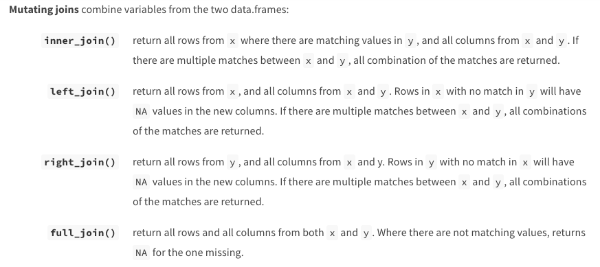
See here for more details about joining data.
Since the population data came from the API, we probably have information about opioid pill shipments for each of the included counties. Since the land area data came from a different source, it may contain additional counties that are not in our population or drug shipment data.
To address this, we will use the left_join(x,y) function
where x in this case will be the county_pop
and y will be the country_area. Here, we will
add the LND110210D (land area) values for all counties that
match county_pop based on the countyfips
column that they have in common.
It is not actually necessary to list x and
y like this, you can simply rely on the x
being listed first and the y being listed second.
Thus, this works too:
You can check to see that the county_info tibble has the
same number of rows as the county_pop tibble, i.e., our
join preserved the data points in the county_pop tibble and
added values from the land_area tibble where there was a
match on the countyfips variable.
[1] TRUEWe are now ready to calculate the population density per square mile.
We create a new column with this data using the mutate()
function and the / to divide the population
value by the land area value (in square miles) for each county. Let’s
also make the year variable a factor. We can do using the
as.factor() base function. If you are not familiar with
factors, please see the click to expand section above about data classes
in R.
county_info <- county_info %>%
mutate(density = population/LND110210D,
year = as.factor(year))
glimpse(county_info)Rows: 28,265
Columns: 13
$ BUYER_COUNTY <chr> "AUTAUGA", "BALDWIN", "BARBOUR", "BIBB", "BLOUNT", "BULLO…
$ BUYER_STATE <chr> "AL", "AL", "AL", "AL", "AL", "AL", "AL", "AL", "AL", "AL…
$ countyfips <chr> "01001", "01003", "01005", "01007", "01009", "01011", "01…
$ STATE <int> 1, 1, 1, 1, 1, 1, 1, 1, 1, 1, 1, 1, 1, 1, 1, 1, 1, 1, 1, …
$ COUNTY <int> 1, 3, 5, 7, 9, 11, 13, 15, 17, 19, 21, 23, 25, 27, 29, 31…
$ county_name <chr> "Autauga", "Baldwin", "Barbour", "Bibb", "Blount", "Bullo…
$ NAME <chr> "Autauga County, Alabama", "Baldwin County, Alabama", "Ba…
$ variable <chr> "B01003_001", "B01003_001", "B01003_001", "B01003_001", "…
$ year <fct> 2006, 2006, 2006, 2006, 2006, 2006, 2006, 2006, 2006, 200…
$ population <int> 51328, 168121, 27861, 22099, 55485, 10776, 20815, 115388,…
$ Areaname <chr> "Autauga, AL", "Baldwin, AL", "Barbour, AL", "Bibb, AL", …
$ LND110210D <dbl> 594.44, 1589.78, 884.88, 622.58, 644.78, 622.81, 776.83, …
$ density <dbl> 86.34681, 105.75111, 31.48563, 35.49584, 86.05261, 17.302…Great, now we are ready to create a variable that classifies if a county was rural or urban based on our definition of rural counties being those with less than 500 people per square mile as well as those with less than 2,500 people.
We will use the case_when() function of the
dplyr package to classify the new rural_urban
variable as either "Urban" or "Rural" based on
the evaluations of the density and the
population variables.
"Urban"."Rural".The | operator is used to indicate that either
expression should result in coding the county as
"Rural"
county_info <- county_info %>%
mutate(rural_urban = case_when(density >= 500 ~ "Urban",
density < 500 | population < 2500 ~ "Rural"))We can use the count() function of the
dplyr package to see how many of each this resulted in:
# A tibble: 2 × 2
rural_urban n
<chr> <int>
1 Rural 26065
2 Urban 2200We will now combine the annualDosage data with the
count_info tibble.
Question Opportunity
How might we do this?
Rows: 27,007
Columns: 16
$ BUYER_COUNTY <chr> "ABBEVILLE", "ABBEVILLE", "ABBEVILLE", "ABBEVILLE", "ABBE…
$ BUYER_STATE <chr> "SC", "SC", "SC", "SC", "SC", "SC", "SC", "SC", "SC", "LA…
$ year <fct> 2006, 2007, 2008, 2009, 2010, 2011, 2012, 2013, 2014, 200…
$ count <int> 877, 908, 871, 930, 1197, 1327, 1509, 1572, 1558, 5802, 5…
$ DOSAGE_UNIT <dbl> 363620, 402940, 424590, 467230, 539280, 566560, 589010, 5…
$ countyfips <chr> "45001", "45001", "45001", "45001", "45001", "45001", "45…
$ STATE <int> 45, 45, 45, 45, 45, 45, 45, 45, 45, 22, 22, 22, 22, 22, 2…
$ COUNTY <int> 1, 1, 1, 1, 1, 1, 1, 1, 1, 1, 1, 1, 1, 1, 1, 1, 1, 1, 1, …
$ county_name <chr> "Abbeville", "Abbeville", "Abbeville", "Abbeville", "Abbe…
$ NAME <chr> "Abbeville County, South Carolina", "Abbeville County, So…
$ variable <chr> "B01003_001", "B01003_001", "B01003_001", "B01003_001", "…
$ population <int> 25821, 25745, 25699, 25347, 25643, 25515, 25387, 25233, 2…
$ Areaname <chr> "Abbeville, SC", "Abbeville, SC", "Abbeville, SC", "Abbev…
$ LND110210D <dbl> 490.48, 490.48, 490.48, 490.48, 490.48, 490.48, 490.48, 4…
$ density <dbl> 52.64435, 52.48940, 52.39561, 51.67795, 52.28144, 52.0204…
$ rural_urban <chr> "Rural", "Rural", "Rural", "Rural", "Rural", "Rural", "Ru…Great, now we should have the data that we need to answer our question, but first let’s do some additional checks before we proceed with our analysis.
Notice how there is a variable called
DOSAGE_UNIT. This variable gives the number of pills
shipped to a pharmacy in this county that were either oxycodone
or hydrocodone.
Let’s do a check to see how complete our data is now that we have
combined our country_info data with the
annualDosage data.
We have NA values for any counties present in the DAE data, but not
in our land area data. We can use the gg_miss_var()
function from the naniar package to create a plot that
shows if we have any missing data.
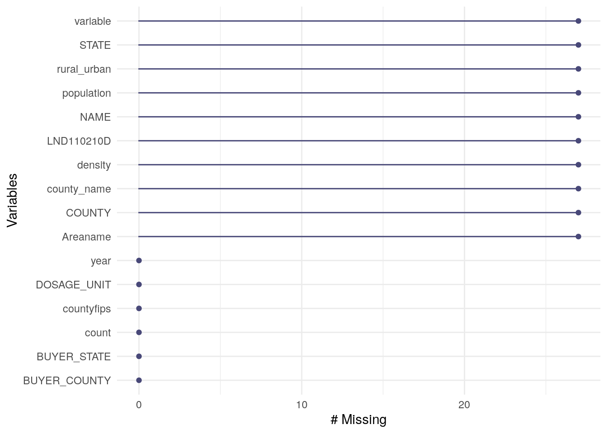
We can see that several variables are missing for some of our counties.
Let’s take a look at the counties that are missing density.
# A tibble: 27 × 16
BUYER_COUNTY BUYER_STATE year count DOSAGE_UNIT countyfips STATE COUNTY
<chr> <chr> <fct> <int> <dbl> <chr> <int> <int>
1 MONTGOMERY AR 2006 469 175390 05097 NA NA
2 MONTGOMERY AR 2007 597 241270 05097 NA NA
3 MONTGOMERY AR 2008 561 251760 05097 NA NA
4 MONTGOMERY AR 2009 554 244160 05097 NA NA
5 MONTGOMERY AR 2010 449 247990 05097 NA NA
6 MONTGOMERY AR 2011 560 313800 05097 NA NA
7 MONTGOMERY AR 2012 696 339520 05097 NA NA
8 MONTGOMERY AR 2013 703 382300 05097 NA NA
9 MONTGOMERY AR 2014 491 396900 05097 NA NA
10 PRINCE OF WALES … AK 2006 190 62700 02201 NA NA
# ℹ 17 more rows
# ℹ 8 more variables: county_name <chr>, NAME <chr>, variable <chr>,
# population <int>, Areaname <chr>, LND110210D <dbl>, density <dbl>,
# rural_urban <chr>There does not appear to be land area and/or population data for these counties.
Let’s take a look back at our original data tibbles (prior to merging) for a few of these counties to see where the data first went missing.
# A tibble: 9 × 14
BUYER_COUNTY BUYER_STATE countyfips STATE COUNTY county_name NAME variable
<chr> <chr> <chr> <int> <int> <chr> <chr> <chr>
1 AUTAUGA AL 01001 1 1 Autauga Autauga… B01003_…
2 AUTAUGA AL 01001 1 1 Autauga Autauga… B01003_…
3 AUTAUGA AL 01001 1 1 Autauga Autauga… B01003_…
4 AUTAUGA AL 01001 1 1 Autauga Autauga… B01003_…
5 AUTAUGA AL 01001 1 1 Autauga Autauga… B01003_…
6 AUTAUGA AL 01001 1 1 Autauga Autauga… B01003_…
7 AUTAUGA AL 01001 1 1 Autauga Autauga… B01003_…
8 AUTAUGA AL 01001 1 1 Autauga Autauga… B01003_…
9 AUTAUGA AL 01001 1 1 Autauga Autauga… B01003_…
# ℹ 6 more variables: year <fct>, population <int>, Areaname <chr>,
# LND110210D <dbl>, density <dbl>, rural_urban <chr># A tibble: 0 × 14
# ℹ 14 variables: BUYER_COUNTY <chr>, BUYER_STATE <chr>, countyfips <chr>,
# STATE <int>, COUNTY <int>, county_name <chr>, NAME <chr>, variable <chr>,
# year <fct>, population <int>, Areaname <chr>, LND110210D <dbl>,
# density <dbl>, rural_urban <chr># A tibble: 0 × 14
# ℹ 14 variables: BUYER_COUNTY <chr>, BUYER_STATE <chr>, countyfips <chr>,
# STATE <int>, COUNTY <int>, county_name <chr>, NAME <chr>, variable <chr>,
# year <fct>, population <int>, Areaname <chr>, LND110210D <dbl>,
# density <dbl>, rural_urban <chr># A tibble: 0 × 14
# ℹ 14 variables: BUYER_COUNTY <chr>, BUYER_STATE <chr>, countyfips <chr>,
# STATE <int>, COUNTY <int>, county_name <chr>, NAME <chr>, variable <chr>,
# year <fct>, population <int>, Areaname <chr>, LND110210D <dbl>,
# density <dbl>, rural_urban <chr>Ah ha, it looks like there wasn’t information for it in the
county_info tibble. If you recall this was created by
joining the land_area data with the county_pop
data.
Let’s take a look in these tibbles.
There is land data for the first county, but that’s all:
# A tibble: 1 × 3
Areaname countyfips LND110210D
<chr> <chr> <dbl>
1 Montgomery, AR 05097 780.# A tibble: 0 × 3
# ℹ 3 variables: Areaname <chr>, countyfips <chr>, LND110210D <dbl># A tibble: 0 × 3
# ℹ 3 variables: Areaname <chr>, countyfips <chr>, LND110210D <dbl>Did we have population data for the Montgomery, AR county?
# A tibble: 0 × 10
# ℹ 10 variables: BUYER_COUNTY <chr>, BUYER_STATE <chr>, countyfips <chr>,
# STATE <int>, COUNTY <int>, county_name <chr>, NAME <chr>, variable <chr>,
# year <int>, population <int># A tibble: 0 × 10
# ℹ 10 variables: BUYER_COUNTY <chr>, BUYER_STATE <chr>, countyfips <chr>,
# STATE <int>, COUNTY <int>, county_name <chr>, NAME <chr>, variable <chr>,
# year <int>, population <int>It looks like we didn’t.
It’s a good idea to check your original data, to make sure that you didn’t lose values simply from the process of joining data together. It does not look like that was the case for us.
We will now remove these rows before further analysis:
Question Opportunity
Do you recall how you would do this?
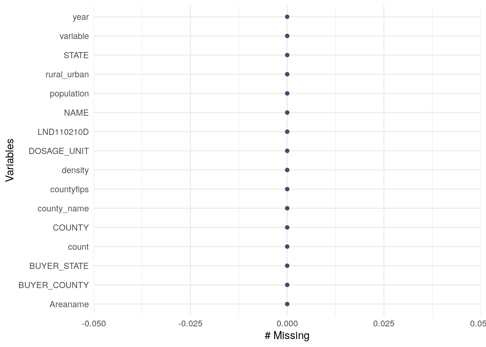
Nice! Now we have no missing data.
Let’s also check if there were any counties in
county_info that were not in the DEA
annualDosage data.
This time we will use the left_join() function but with
the county_info listed first, to preserve all values of the
county_info tibble.
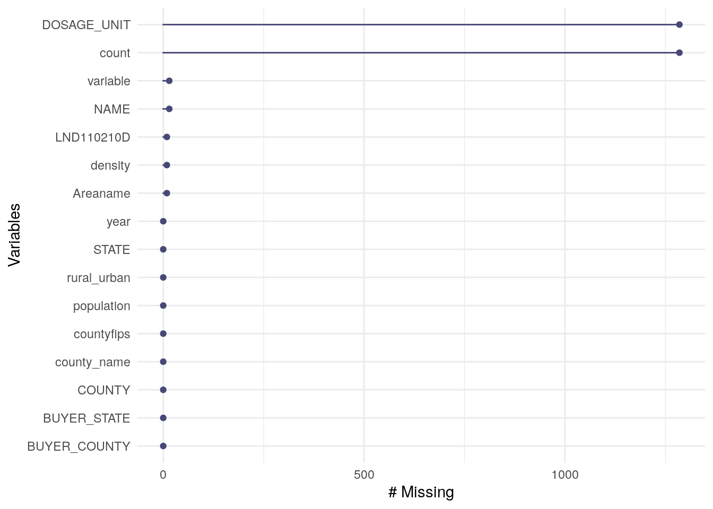
We can see that there are over one thousand NA values
for the DOSAGE_UNIT variable.
We can use the filter() function again to see what
counties don’t have any DOSAGE_UNIT values and thus don’t
appear to have this data in the Washington Post DEA data.
# A tibble: 1,285 × 16
BUYER_COUNTY BUYER_STATE countyfips STATE COUNTY county_name NAME variable
<chr> <chr> <chr> <int> <int> <chr> <chr> <chr>
1 BRISTOL BAY AK 02060 2 60 Bristol Bay Bris… B01003_…
2 DILLINGHAM AK 02070 2 70 Dillingham Dill… B01003_…
3 LAKE AND PENI… AK 02164 2 164 Lake and P… Lake… B01003_…
4 NOME AK 02180 2 180 Nome Nome… B01003_…
5 PRINCE OF WAL… AK 02198 2 201 Prince of … <NA> <NA>
6 SKAGWAY HOONA… AK 02232 2 232 Skagway Ho… <NA> <NA>
7 SOUTHEAST FAI… AK 02240 2 240 Southeast … Sout… B01003_…
8 WADE HAMPTON AK 02270 2 270 Wade Hampt… Wade… B01003_…
9 WRANGELL AK 02275 2 280 Wrangell <NA> <NA>
10 YAKUTAT AK 02282 2 282 Yakutat Yaku… B01003_…
# ℹ 1,275 more rows
# ℹ 8 more variables: year <fct>, population <int>, Areaname <chr>,
# LND110210D <dbl>, density <dbl>, rural_urban <chr>, count <int>,
# DOSAGE_UNIT <dbl># A tibble: 174 × 1
countyfips
<chr>
1 02060
2 02070
3 02164
4 02180
5 02198
6 02232
7 02240
8 02270
9 02275
10 02282
# ℹ 164 more rowsIt looks like there are 174 counties that do not have any data in the DEA data.
It is unclear why these counties are not included. A Google search of some of these counties did not indicate anything unusual about the counties in terms of when it was established or if it became part of another county later in time.
Thus, it is important to keep in mind as we continue to analyze this data, that the ARCOS data from the DEA released by the Washington Post does not include pill shipment information for all US counties.
Let’s save this data now in a directory called “wrangled” within the “data” directory. We will also write csv file versions which could be useful to give to a collaborator for example.
write.csv(Annual, file = here::here("data","wrangled", "Annual_opioid_data.csv"))
save(Annual, file = here::here("data","wrangled", "Annual_opioid_data.rda"))
write.csv(county_info, file = here::here("data", "wrangled", "county_info.csv"))
save(county_info, file = here::here("data", "wrangled", "county_info.rda"))If you have been following along but stopped, we could load our wrangled data from the “data” directory like so:
load(file = here::here("data", "wrangled", "Annual_opioid_data.rda"))
load(file = here::here("data", "wrangled", "county_info.rda"))First you need to install and load the OCSdata
package:
Then, you may download and load the wrangled data into your R environment using the following code:
wrangled_rda("ocs-bp-opioid-rural-urban", outpath = getwd())
load(file = here::here("OCSdata", "data", "wrangled", "Annual_opioid_data.rda"))
load(file = here::here("OCSdata", "data", "wrangled", "county_info.rda"))If the package does not work for you, alternatively, the RDA files
(stands for R data) of the data can be found in our GitHub
repository. Download these files and then place them in your current
working directory within a subdirectory called “wrangled” within a
subdirectory called “data” to copy and paste our code. We used an
RStudio project and the here
package to navigate to the files more easily.
load(file = here::here("data","wrangled", "Annual_opioid_data.rda"))
load(file = here::here("data", "wrangled", "county_info.rda"))You can create a project by going to the File menu of RStudio like so:
You can also do so by clicking the project button:
See here
to learn more about using RStudio projects and here to learn more about
the here package.
We will begin by taking a deeper look at our data with some
visualizations. We will use the ggplot2 package to create
these visualizations.
ggplot2
The ggplot2 package is
generally intuitive for beginners because it is based on a grammar of
graphics or the gg in ggplot2. The idea is
that you can construct many sentences by learning just a few nouns,
adjectives, and verbs. There are specific “words” that we will need to
learn and once we do, you will be able to create (or “write”) hundreds
of different plots.
The critical part to making graphics using ggplot2 is
the data needs to be in a tidy format. Given that we have just
spent time putting our data in tidy format, we are primed to
take advantage of all that ggplot2 has to offer!
We will show how it is easy to pipe tidy data (output) as input to other functions that create plots. This all works because we are working within the tidyverse.
What is the ggplot() function? As
explained by Hadley Wickham:
The grammar tells us that a statistical graphic is a mapping from data to aesthetic attributes (colour, shape, size) of geometric objects (points, lines, bars). The plot may also contain statistical transformations of the data and is drawn on a specific coordinates system.
ggplot2 Terminology:
x and y variable names)geom_point(), geom_bar(),
geom_line(), geom_histogram()The function aes() is an aesthetic mapping function
inside the ggplot() object. We use this function to specify
plot attributes (e.g. x and y variable names)
that will not change as we add more layers.
Anything that goes in the ggplot() object becomes a
global setting. From there, we use the geom objects to add
more layers to the base ggplot() object. These will define
what we are interested in illustrating using the data.
Let’s make a plot to see how population density has changed over time in each state.
To do this, we want to calculate a mean population density (across all the counties) for each state for each year.
We can do this using the group_by() and
summarize() functions of the dplyr package.
The group_by functions allows for the data to be arranged
into groups for subsequent functions.
If we group only by BUYER_STATE, you see that this
results in 51 groups (one for each state including Washington DC). This
does not change anything about the data itself (or even how it is
printed aside from the groups written above the table), just how it is
handled in subsequent steps.
# A tibble: 26,980 × 16
# Groups: BUYER_STATE [51]
BUYER_COUNTY BUYER_STATE year count DOSAGE_UNIT countyfips STATE COUNTY
<chr> <chr> <fct> <int> <dbl> <chr> <int> <int>
1 ABBEVILLE SC 2006 877 363620 45001 45 1
2 ABBEVILLE SC 2007 908 402940 45001 45 1
3 ABBEVILLE SC 2008 871 424590 45001 45 1
4 ABBEVILLE SC 2009 930 467230 45001 45 1
5 ABBEVILLE SC 2010 1197 539280 45001 45 1
6 ABBEVILLE SC 2011 1327 566560 45001 45 1
7 ABBEVILLE SC 2012 1509 589010 45001 45 1
8 ABBEVILLE SC 2013 1572 596420 45001 45 1
9 ABBEVILLE SC 2014 1558 641350 45001 45 1
10 ACADIA LA 2006 5802 1969720 22001 22 1
# ℹ 26,970 more rows
# ℹ 8 more variables: county_name <chr>, NAME <chr>, variable <chr>,
# population <int>, Areaname <chr>, LND110210D <dbl>, density <dbl>,
# rural_urban <chr>Alternatively, if we group by year this results in 9
groups of data, one for each year.
# A tibble: 26,980 × 16
# Groups: year [9]
BUYER_COUNTY BUYER_STATE year count DOSAGE_UNIT countyfips STATE COUNTY
<chr> <chr> <fct> <int> <dbl> <chr> <int> <int>
1 ABBEVILLE SC 2006 877 363620 45001 45 1
2 ABBEVILLE SC 2007 908 402940 45001 45 1
3 ABBEVILLE SC 2008 871 424590 45001 45 1
4 ABBEVILLE SC 2009 930 467230 45001 45 1
5 ABBEVILLE SC 2010 1197 539280 45001 45 1
6 ABBEVILLE SC 2011 1327 566560 45001 45 1
7 ABBEVILLE SC 2012 1509 589010 45001 45 1
8 ABBEVILLE SC 2013 1572 596420 45001 45 1
9 ABBEVILLE SC 2014 1558 641350 45001 45 1
10 ACADIA LA 2006 5802 1969720 22001 22 1
# ℹ 26,970 more rows
# ℹ 8 more variables: county_name <chr>, NAME <chr>, variable <chr>,
# population <int>, Areaname <chr>, LND110210D <dbl>, density <dbl>,
# rural_urban <chr>We want to group by both BUYER_STATE and
year, so that we get the mean of all the counties for each
state for each year. If we only did by BUYER_STATE, we
would only get 51 summarized results, one for each state representing a
mean across the years.
# A tibble: 26,980 × 16
# Groups: BUYER_STATE, year [459]
BUYER_COUNTY BUYER_STATE year count DOSAGE_UNIT countyfips STATE COUNTY
<chr> <chr> <fct> <int> <dbl> <chr> <int> <int>
1 ABBEVILLE SC 2006 877 363620 45001 45 1
2 ABBEVILLE SC 2007 908 402940 45001 45 1
3 ABBEVILLE SC 2008 871 424590 45001 45 1
4 ABBEVILLE SC 2009 930 467230 45001 45 1
5 ABBEVILLE SC 2010 1197 539280 45001 45 1
6 ABBEVILLE SC 2011 1327 566560 45001 45 1
7 ABBEVILLE SC 2012 1509 589010 45001 45 1
8 ABBEVILLE SC 2013 1572 596420 45001 45 1
9 ABBEVILLE SC 2014 1558 641350 45001 45 1
10 ACADIA LA 2006 5802 1969720 22001 22 1
# ℹ 26,970 more rows
# ℹ 8 more variables: county_name <chr>, NAME <chr>, variable <chr>,
# population <int>, Areaname <chr>, LND110210D <dbl>, density <dbl>,
# rural_urban <chr>We can see that this results in 459 groups. This makes sense because 51 groups over 9 years is 51 multiplied by 9, which equals 459.
Next, we will need to use the summarize() function of
the dplyr package. Notice that the Hmisc
package that we loaded at the beginning of this case study also has a
function called summarize(), and therefore, creating a
conflict. Since we loaded Hmisc after we loaded
dplyr, the summarize() function of the
dplyr package is masked by the summarize()
function of the Hmisc package, meaning that if we do not
specify which package we want to use, R will use the
summarize() function of the Hmisc package by
default. To deal with this, we can use dplyr::summarize()
to specify that we want to use the function of the dplyr
package. However, since we will be using this function several times
later in the case study, we might want to tell R that when we use the
summarize() function, we want to use the function of the
dplyr package. We can do this like so:
You may also follow this link to
learn about the conflicted package.
We can use the summarize() function of the
dplyr package to create a new variable called
mean_DENS, which will be equal to the mean of the
population density variable for all the counties within
each of the 449 groups. If we had missing values we would need to use
the na.rm = TRUE argument to remove any missing values in
our calculation.
# A tibble: 459 × 3
# Groups: BUYER_STATE [51]
BUYER_STATE year mean_DENS
<chr> <fct> <dbl>
1 AK 2006 11.6
2 AK 2007 12.2
3 AK 2008 13.9
4 AK 2009 13.0
5 AK 2010 13.2
6 AK 2011 14.2
7 AK 2012 13.5
8 AK 2013 14.6
9 AK 2014 14.7
10 AL 2006 87.3
# ℹ 449 more rowsOK! Now we are ready to make our first plot.
We will start with the ggplot()function to specify what
variables will be used for the x-axis and y-axis, as well as if any
variable should be used to specify different colors on the plot. This
will result in a blank plot.
We need to use a geom_* function to specify what type of
plot we would like to make.
If you type geom_ into the console of RStudio, you will
see a list of options.
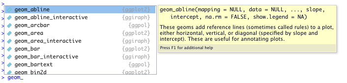
We will create a scatter plot using the geom_point()
function. We will also use the theme_minimal() function to
change the overall aesthetics of the plot. See here for
a list of options.
We will also use the theme() function to further specify
how we want the plot to be displayed. We would like the x-axis text to
be angled by 90 degrees. We can use the element_text()
function to change aspects about the text and we can use the
axis.text.x argument to specify that we want to
specifically change the text of the x-axis.
You can type theme() in the RStudio console and press
tab to see a list of argument options for things that you can change in
your plot.
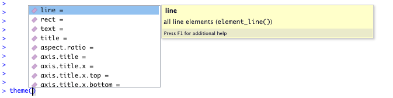
Finally, we can use the labs() function of the
ggplot2 package to specify the labels of the plot.
Annual %>%
group_by(BUYER_STATE, year) %>%
summarize(mean_DENS = mean(density, na.rm = TRUE)) %>%
ggplot(aes(x = BUYER_STATE, y = mean_DENS, col = year)) +
geom_point() +
theme_minimal()+
theme(axis.title.x = element_blank(),
axis.text.x = element_text(angle = 90)) +
labs(x = "State",
title = "Mean County Population Density of each State",
y = "Mean Population Density (People per square mile)")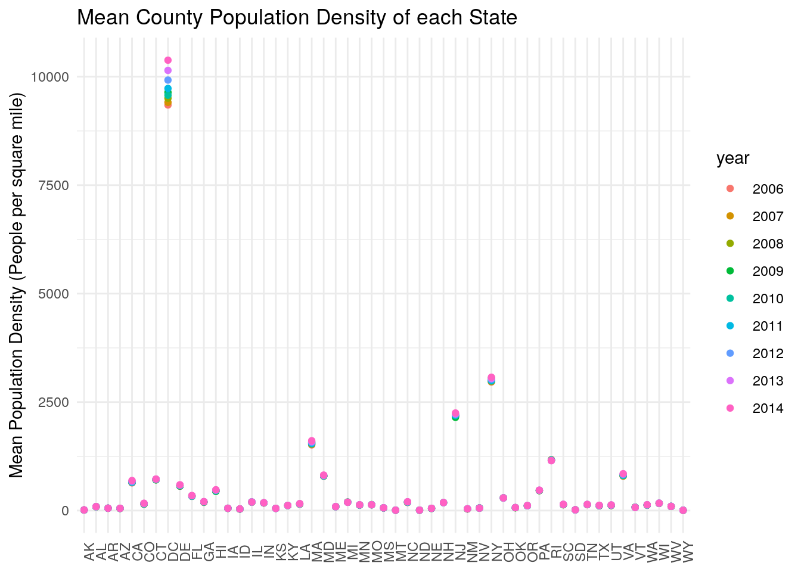
We can see that the average state population density is fairly similar for most states. However DC, MA, NJ, NY, RI, and VA have much higher average county densities. We also see that DC shows the largest change over time, as we can see the other individual points for each year. For other states the change was so small that they are overlapping.
What about overall population density, how did the national average of all US counties change?
We will ignore the different states in this case and we will calculate the mean of all US counties for each year.
Question Opportunity
How might you create this plot?
USavg_dens <-
Annual %>%
group_by(year) %>%
summarize(mean_DENS = mean(density)) %>%
ggplot(aes(x = year, y = mean_DENS)) +
geom_point() +
theme_minimal() +
theme(axis.title.x=element_blank()) +
labs(title = "US mean population density",
x = "year",
y = "population density (people per square mile)")In this case we saved the plot to an object called
USavg_dens.
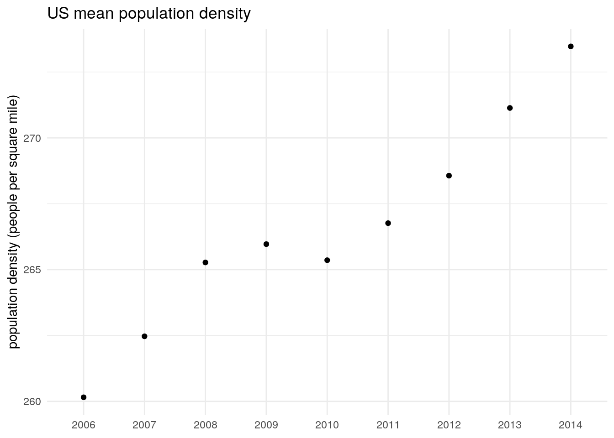
Overall the density has increased, if you take a look at the y-axis you can see that the density has changed by about 13 people per square mile from 2006 to 2014.
How does this compare with raw population values?
To make this plot, we will take the sum of the population values for each county rather than the mean.
Question Opportunity
How might you create this plot?
overall_density <-
Annual %>%
group_by(year) %>%
summarize(total_population = sum(population)) %>%
ggplot(aes(x = year, y = total_population)) +
geom_point() +
geom_smooth() +
theme_minimal() +
theme(axis.title.x = element_blank()) +
labs(title = "US Population from 2006-2014",
x = "year",
y = "US total population")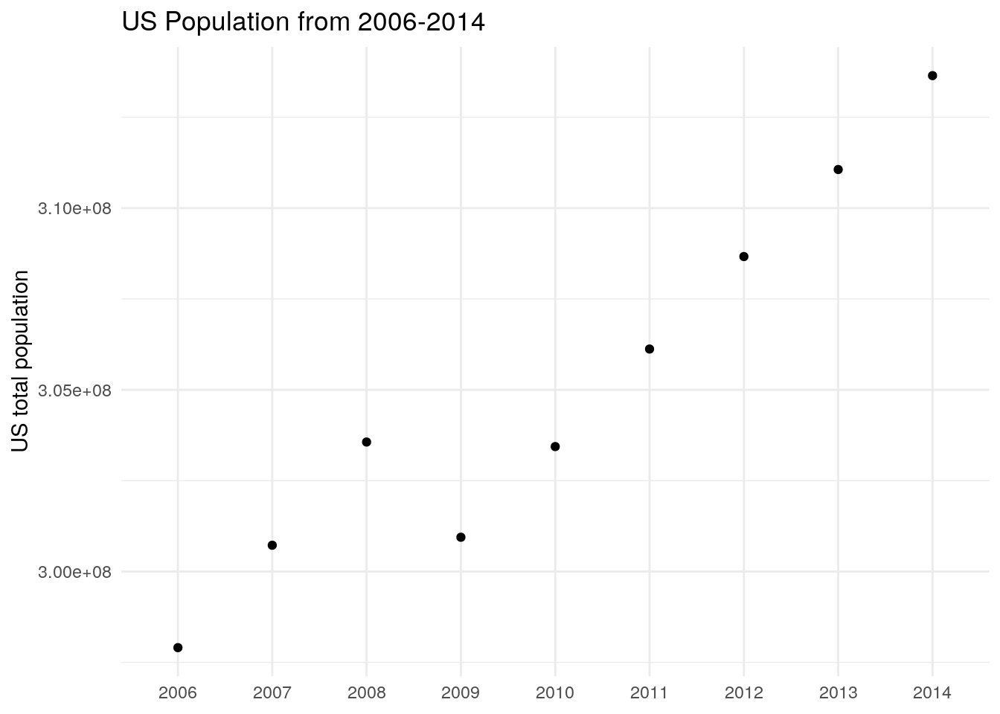
How have the number of rural and urban areas changed over years?
To determine how the number of each type of county has changed over
time, we will use the count() function of the
dplyr package after grouping by the year
variable to count the number of occurrences of the unique values (which
are Rural and Urban) in the
rural_ubran variable.
# A tibble: 18 × 3
# Groups: year [9]
year rural_urban n
<fct> <chr> <int>
1 2006 Rural 2769
2 2006 Urban 235
3 2007 Rural 2760
4 2007 Urban 238
5 2008 Rural 2753
6 2008 Urban 238
7 2009 Rural 2756
8 2009 Urban 236
9 2010 Rural 2753
10 2010 Urban 238
11 2011 Rural 2756
12 2011 Urban 243
13 2012 Rural 2761
14 2012 Urban 243
15 2013 Rural 2754
16 2013 Urban 246
17 2014 Rural 2753
18 2014 Urban 248In this case, we can make a plot using two different
geom_* layers together. Whatever geom_* layer
is added last will be displayed on top.
We will use geom_point() and geom_smooth()
to add a line connecting the points of the scatter plot of the
geom_point() function. We can also use the
facet_wrap() function of the ggplot2 package
to create subplots based on the rural_urban variable.
This creates a subplot for the Rural values and another
for the Urban values. The scales = "free"
argument allows for each to have a different scale for the y-axis.
Annual %>%
group_by(year) %>%
count(rural_urban) %>%
ggplot(aes(x = year, y = n, col = rural_urban,
group = rural_urban)) +
geom_point() +
geom_smooth() +
facet_wrap(~ rural_urban, scales = "free") +
theme_minimal() +
theme(axis.title.x = element_blank(),
axis.text.x = element_text(angle = 90),
legend.title = element_blank()) +
labs(y = "Number of Counties",
x = "Year",
title = "Change in the number of the rural and urban counties in the US over time")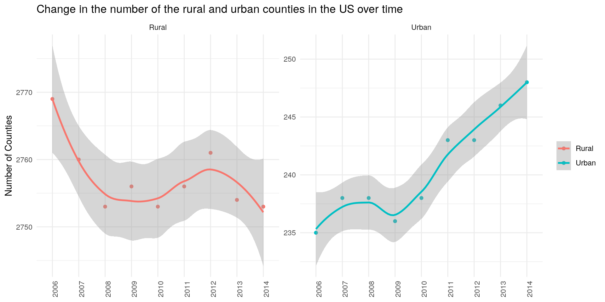
As one might expect, it looks like the number of urban areas has increased, while the number of rural areas has decreased over time.
Let’s also create a table to look at the number of rural and urban
counties over time. To do this we can use the package
formattable. We will convert our data into a format needed
for the formattable package.
We previously counted the number of Rural and
Urban counties for each year. However, the data was
presented in a format that is called long
format. In this format, variables that could possibly be presented
as separate columns are condensed into fewer columns, while still
maintaining only a single value per cell.
The opposite of this format is called wide format data, which therefore has more columns and fewer rows. This is best illustrated with an example.

On the left is “wide” dataset with more columns and fewer rows. On the right is a “long” dataset where the month columns have been collapsed into two longer columns (one with the name of the month and one with the numeric value) resulting in fewer columns and more rows.
While long format is very useful for creating plots with
ggplot2 it is helpful to have the data in wide format for
tables that someone would quickly read, which is our current goal.
Here is an example of wide data about different measurements of a variety species of Iris flowers.
Sepal.Length Sepal.Width Petal.Length Petal.Width Species
1 4.3 3.0 1.1 0.1 setosa
2 5.0 3.3 1.4 0.2 setosa
3 7.7 3.8 6.7 2.2 virginica
4 4.4 3.2 1.3 0.2 setosa
5 5.9 3.0 5.1 1.8 virginica
6 6.5 3.0 5.2 2.0 virginica
7 5.5 2.5 4.0 1.3 versicolor
8 5.5 2.6 4.4 1.2 versicolor
9 5.8 2.7 5.1 1.9 virginica
10 6.1 3.0 4.6 1.4 versicolorOK, so currently we have 4 different columns about measurements of different flowers. Since all of these measurements are similar, one might produce a new variable that is made up of the names of the first four variables and another that is the numeric value like so:
# A tibble: 40 × 3
Species Measurement Value
<fct> <chr> <dbl>
1 setosa Sepal.Length 4.3
2 setosa Sepal.Width 3
3 setosa Petal.Length 1.1
4 setosa Petal.Width 0.1
5 setosa Sepal.Length 5
6 setosa Sepal.Width 3.3
7 setosa Petal.Length 1.4
8 setosa Petal.Width 0.2
9 virginica Sepal.Length 7.7
10 virginica Sepal.Width 3.8
# ℹ 30 more rowsNext, we demonstrate how to convert the counts of Rural
and Urban data into wide format from long format. Here is
our original data:
# A tibble: 18 × 3
# Groups: year [9]
year rural_urban n
<fct> <chr> <int>
1 2006 Rural 2769
2 2006 Urban 235
3 2007 Rural 2760
4 2007 Urban 238
5 2008 Rural 2753
6 2008 Urban 238
7 2009 Rural 2756
8 2009 Urban 236
9 2010 Rural 2753
10 2010 Urban 238
11 2011 Rural 2756
12 2011 Urban 243
13 2012 Rural 2761
14 2012 Urban 243
15 2013 Rural 2754
16 2013 Urban 246
17 2014 Rural 2753
18 2014 Urban 248We would like the rural_urban data to be shown in two
different columns; one that shows Rural counts and one that
shows Urban counts. We can use the
pivot_wider() function of the tidyr package to
do this. This takes two important arguments:
names_from: this argument indicates what variable to
use to create the names of the new variablesvalues_from: this argument indicates what variable to
use to fill in the values of the new variablesIn our case, we use the names from the rural_urban
variable and the values from the n variable.
Annual %>%
group_by(year) %>%
count(rural_urban) %>%
tidyr::pivot_wider(names_from = rural_urban,
values_from = n)# A tibble: 9 × 3
# Groups: year [9]
year Rural Urban
<fct> <int> <int>
1 2006 2769 235
2 2007 2760 238
3 2008 2753 238
4 2009 2756 236
5 2010 2753 238
6 2011 2756 243
7 2012 2761 243
8 2013 2754 246
9 2014 2753 248Nice!
Now, let’s also create two new variables that show the change in
count of rural and urban counties from one year to the next. We can do
so using the lag() function of the dplyr
package. This function will find the previous value thus
Rural - lag(Rural) will take the current row and subtract
the previous row’s value. Note that is necessary to include the
ungroup() function to stop grouping by year.
Annual %>%
group_by(year) %>%
count(rural_urban) %>%
tidyr::pivot_wider(names_from = rural_urban,
values_from = n) %>%
ungroup() %>%
mutate("Rural Change" = Rural - lag(Rural),
"Urban Change" = Urban - lag(Urban))# A tibble: 9 × 5
year Rural Urban `Rural Change` `Urban Change`
<fct> <int> <int> <int> <int>
1 2006 2769 235 NA NA
2 2007 2760 238 -9 3
3 2008 2753 238 -7 0
4 2009 2756 236 3 -2
5 2010 2753 238 -3 2
6 2011 2756 243 3 5
7 2012 2761 243 5 0
8 2013 2754 246 -7 3
9 2014 2753 248 -1 2Let’s also add a column about the percent urban for each year. We use
the base round() function to round the percentages to 2
digits after the decimal using the digits = 2 argument.
Finally, we rename the year variable to be
Year using the rename() function of the
dplyr package, which requires that the new name be listed
before the = sign followed by the old name.
R_U <-
Annual %>%
group_by(year) %>%
count(rural_urban) %>%
tidyr::pivot_wider(names_from = rural_urban,
values_from = n) %>%
ungroup() %>%
mutate("Rural Change" = Rural - lag(Rural),
"Urban Change" = Urban - lag(Urban),
"Percent Urban" = round((Urban/(Urban + Rural))*100,
digits = 2)) %>%
rename("Year" = "year")
R_U# A tibble: 9 × 6
Year Rural Urban `Rural Change` `Urban Change` `Percent Urban`
<fct> <int> <int> <int> <int> <dbl>
1 2006 2769 235 NA NA 7.82
2 2007 2760 238 -9 3 7.94
3 2008 2753 238 -7 0 7.96
4 2009 2756 236 3 -2 7.89
5 2010 2753 238 -3 2 7.96
6 2011 2756 243 3 5 8.1
7 2012 2761 243 5 0 8.09
8 2013 2754 246 -7 3 8.2
9 2014 2753 248 -1 2 8.26Nice, now it is pretty easy to interpret table, but we can make it
even easier to quickly assess trends in the data using the
formattable package.
The formmattable() function creates a formatted table,
and takes a list of variables and a stylized version of each variable in
which to add special formatting.
As a simple example, we will use the color_bar()
function of this package to add color bars to the
percent_urban column which shows changes in values by the
width of a color bar.
| Year | Rural | Urban | Rural Change | Urban Change | Percent Urban |
|---|---|---|---|---|---|
| 2006 | 2769 | 235 | NA | NA | 7.82 |
| 2007 | 2760 | 238 | -9 | 3 | 7.94 |
| 2008 | 2753 | 238 | -7 | 0 | 7.96 |
| 2009 | 2756 | 236 | 3 | -2 | 7.89 |
| 2010 | 2753 | 238 | -3 | 2 | 7.96 |
| 2011 | 2756 | 243 | 3 | 5 | 8.10 |
| 2012 | 2761 | 243 | 5 | 0 | 8.09 |
| 2013 | 2754 | 246 | -7 | 3 | 8.20 |
| 2014 | 2753 | 248 | -1 | 2 | 8.26 |
Nice, now we can see how much the percentage has changed over time.
Now let’s get a sense of how the shipments of oxycodone and hydrocodone changed over time across all counties in the US.
First, we create a new variable in the Annual data that
is the number of pills (in millions), as this is easier for us to
interpret.
Next, let’s make a plot using the stat_summary()
function rather than a geom_* function, because this allows
a user to calculate different features about the data to plot using
custom functions that are wrappers for the smean.*
functions from the Hmisc package.
For example, the stat_summary(fun.data = mean_sd) is a
wrapper around the smean.sd function from the
Hmisc package.
See the documentation
for the Hmisc package to learn more about these
functions.
| ggplot2 wrapper | Hmisc function | Details |
|---|---|---|
mean_cl_normal |
smean.cl.normal |
computes 3 summary variables: the sample mean and lower and upper Gaussian confidence limits based on the t-distribution |
mean_sd |
smean.sd |
computes the mean plus or minus the standard deviation |
mean_sdl |
smean.sdl |
computes the mean plus or minus a constant times the standard deviation |
mean_cl_boot |
smean.cl.boot |
fast implementation of the basic nonparametric bootstrap for obtaining confidence limits for the population mean without assuming normality (default is 1000 bootstrap samples) |
median_hilow |
smedian.hilow |
computes the sample median and a selected pair of outer quantiles having equal tail areas |
We will use the mean_cl_boot() function to create our
plot. As noted above, this function uses something called a “bootstrap”
calculate confidence limits for the population mean. Let’s dig into a
bit how this works.
The bootstrap is based on the idea of random sampling with replacement. Let’s assume we take a random sample from a population and calculate the sample mean \(\bar{x}\) = \(\frac{1}{n} \sum_{i=1}^n x_i\), which resulted in \(\bar{x}=3.2\) number of shipped pills (in millions). However, a different random sample might have yielded \(\bar{x}=3.0\), or \(\bar{x}=3.5\). It would be nice to get a sense of the accuracy of the original estimate.
To do that, we need to understand how the proportions \(\bar{x}\) vary sample to sample, or due to random sampling. But first, we need to define a sampling distribution.
If we took 50 different random samples of the number of pills shipped in a given year for a given county, we could see a distribution of the \(\bar{x}\) from the recorded numbers from the different random samples taken (\(\bar{x}_1, \ldots, \bar{x}_{50}\)).
The most important thing to understand about sampling distributions is it’s the distribution of a test statistic (e.g. \(\bar{x}\)) that summarizes a dataset and represents how the statistic varies across many random datasets.
A histogram of one set of observations drawn from a population does not represent a sampling distribution.
A histogram of permutation means, each from one sample, does represent a sampling distribution.
We call the standard deviation of a statistic the standard error.
In the scenario where the true population mean is unknown, all we have are the data and a statistic estimated from the data. We need to estimate the sampling distribution of \(\bar{x}\) to understand how much variability or uncertainty there is.
Here, we will use what’s called the bootstrap to create a new distribution called the bootstrap distribution, which approximates the sampling distribution for test statistics.
To find the bootstrap distribution of sample mean, we draw samples (called resamples or bootstrap samples) of size \(n\), with replacement, from the original sample and then compute the mean of each resample.
A few things to note about bootstrap distributions:
We treat the original sample as the population. If the original sample is representative of the population, then the bootstrap distribution of the test statistics will look approximately like the sampling distribution of the test statistic (same spread and shape).
The bootstrap standard error is the standard deviation of the bootstrap distribution of that statistic.
However, the mean of the bootstrap distribution will be the same as the mean of the original sample (not necessarily that of the original population).
The interval between the 2.5 and 97.5 percentiles of the bootstrap distribution of a statistic is a 95% bootstrap percentile confidence interval for the corresponding parameter.
We can then say that we are 95% confident that the true statistic lies within this interval.
See here for more details about how this process works.
We can use the mean_cl_boot function in our plot with
stat_summary(fun.data = mean_cl_boot) to calculate the 95%
bootstrap confidence intervals.
We can also add a position argument so that our two groups are not
overlapping by choosing the position_doge option which
takes an argument of width which specifies how far apart
the two groups should be plotted.
The confidence intervals are then plotted as a line through a point which shows the range of other possible values for the mean based on the bootstrap samples.
We will also use the stat_summary() function to create a
line between the points based on the mean.
raw_average <-
Annual %>%
group_by(year) %>%
ggplot(aes(x = year, y = Pills_in_millions)) +
stat_summary(fun.data = mean_cl_boot,
position = position_dodge(width=0.5)) +
stat_summary(fun = mean, geom = "line") +
labs(title = "Average Number of Opioid Pills Shipped to a US County",
y = "Number of pills in millions") +
theme_minimal()
raw_average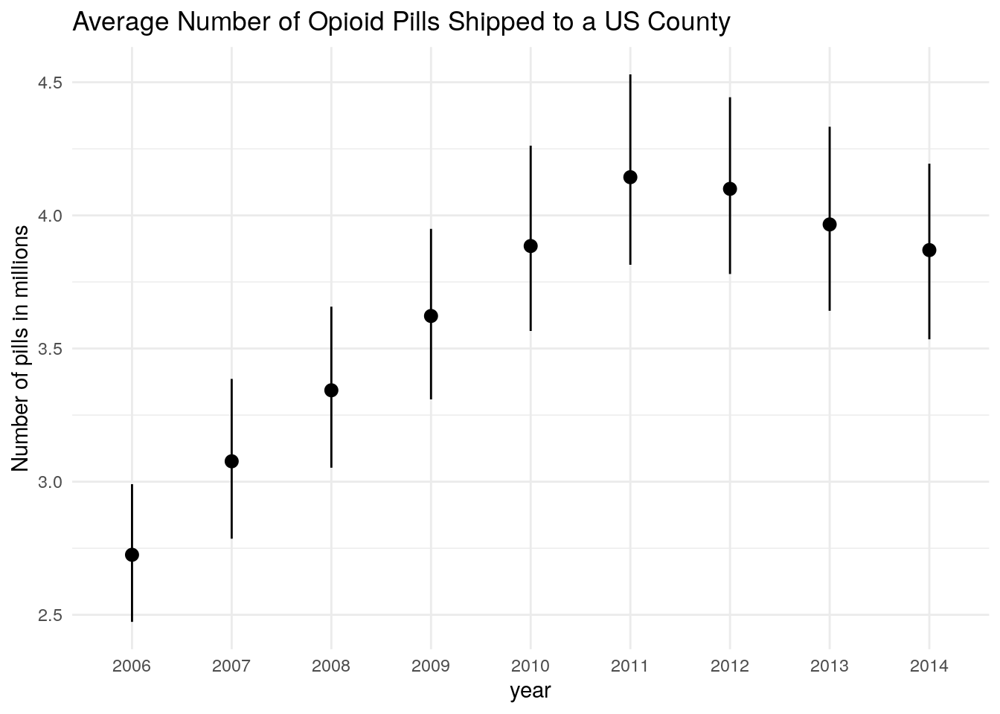
It looks like the average number of opioid pills shipped to a county peaked in 2011 and has slowly declined.
We can look a bit deeper if we only calculate a mean for each state. The plot combines a boxplot with jittered observations to show both the distribution and the individual state averages.
raw_state_avg <-
Annual %>%
group_by(BUYER_STATE, year) %>%
summarize(mean_DOSAGE = mean(Pills_in_millions)) %>%
ungroup() %>%
ggplot(aes(x = year, y = mean_DOSAGE, group = year)) +
geom_boxplot(outlier.shape = NA) +
geom_jitter(width = 0.18, alpha = 0.45) +
labs(title = "Average number of opioid pills shipped to a given county for each state",
x = "",
y = "Number of pills in millions") +
theme_minimal()
raw_state_avg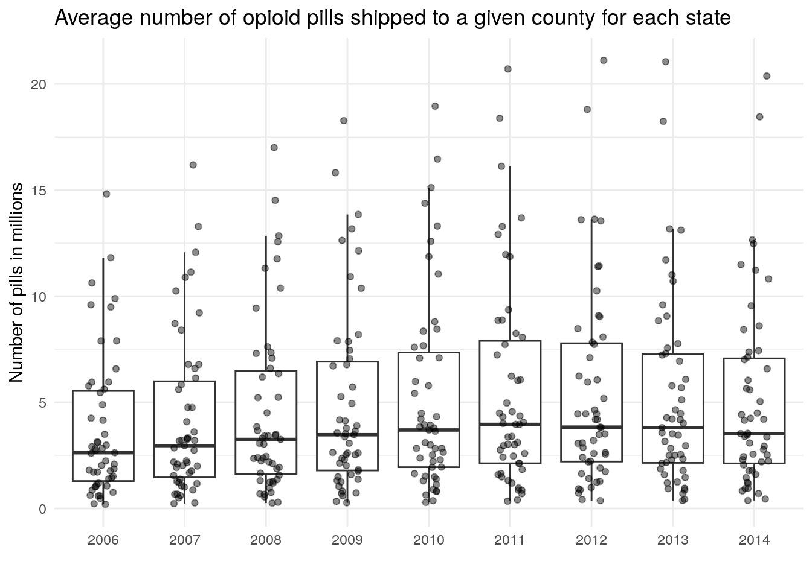
Again we see the same general overall trend, we also see that the spread was quite large with some states receiving many more pills than others.
To get a better sense of how each state changed over time we can create a line plot instead.
Annual %>%
group_by(BUYER_STATE, year) %>%
summarize(mean_DOSAGE = mean(Pills_in_millions)) %>%
ungroup() %>%
ggplot(aes(x = year, y = mean_DOSAGE, group = BUYER_STATE,
color = BUYER_STATE)) +
geom_line() +
labs(title = "Average number of opioid pills shipped to a given county for each state",
y = "Number of pills in millions")+
theme_minimal()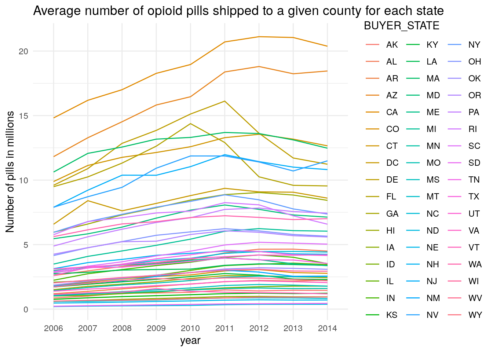
Since we have so many states, the legend is not very useful. Instead
we can use the girafe package to create an
interactive plot that will tell people what state each
line represents when they hover over different data points.
g <-
Annual %>%
group_by(BUYER_STATE, year) %>%
summarize(mean_DOSAGE = mean(Pills_in_millions)) %>%
ungroup() %>%
ggplot(aes(x = year, y = mean_DOSAGE, group = BUYER_STATE,
color = BUYER_STATE)) +
geom_line() +
labs(title = "Average number of opioid pills shipped to a given county for each state",
y = "Number of pills in millions") +
theme_minimal()
g <-
g + geom_point_interactive(aes(color = BUYER_STATE,
tooltip = usdata::abbr2state(BUYER_STATE)),
size = 2, alpha = 3/10) +
theme(legend.position = "none")
girafe(code = print(g))In this plot, it appears that the largest number of pills were shipped to counties in California. However, since we did not account for population or population density, this could simply be because it is the most populated state.
To account for this we will perform something called normalization (or in this case we will adjust for differences in population or population density across different states) to make a more fair comparison.
The term data normalization actually has a variety of meanings.
In some cases, it indicates the process of making data “more normally distributed”, which means that the data is transformed in a such way that when the frequencies of the various data points are plotted, it resembles that of the normal distribution, which looks like a “bell curve”. This may be helpful for performing certain statistical tests that assume that the data is normally distributed.
In other cases, it may mean the process of transforming the data to a common scale so that comparisons can be made fairly.
In our case, we want to compare the number of pills shipped to each county. However, using the raw data results in an unfair comparison as the counties themselves have very different populations. Therefore, if a county has a very large population, we may assume that the large number of pills shipped to that county may indicate that this county received a particularly high amount of opioids, however, it may actually be that this county received far fewer pills per person than a smaller county.
If we divide (or scale) the number of pills shipped to be relative to the number of people in a given county, then we have the number of pills shipped per person. Therefore, the data will be on a similar scale for each county.
This can be extended to evaluating differences between states and rural or urban counties by taking the mean of the normalized pill counts per person for each county within each group.
See here for more information about how this type of normalization is used in Geographic information system (GIS) analyses.
This may be best illustrated with some example data.
Here, we create a tibble for three imaginary counties. Each has a different population but received the same number of pills.
Next, we calculate the number of pills per person by dividing the number of pills shipped to that county by the population of that county.
example_data <-
tibble(population = c(10, 50, 100),
pills = c(100, 100, 100))
example_data <- example_data %>%
mutate(norm_pills = pills/population)
example_data# A tibble: 3 × 3
population pills norm_pills
<dbl> <dbl> <dbl>
1 10 100 10
2 50 100 2
3 100 100 1You can see that on average 10 pills were shipped for each person for the first county.
In the second row, the population is much larger. Despite the same number of pills being shipped to this example county, there were only enough pills shipped for on average 2 per person. In the final row, the population is very large. Only enough pills were shipped to give on average 1 per person.
Note that however, it is likely that only a small portion of the county populations actually received the pills that were shipped to a given county, but this helps us get a sense of the relative amount shipped to each county and likely used by people in the county where the pills were shipped (although this also not certain).
Back to our example: we create a new variable called
pop_DOSAGE that is the number of pills shipped per county
divided by the population of that county:
Rows: 26,980
Columns: 18
$ BUYER_COUNTY <chr> "ABBEVILLE", "ABBEVILLE", "ABBEVILLE", "ABBEVILLE", …
$ BUYER_STATE <chr> "SC", "SC", "SC", "SC", "SC", "SC", "SC", "SC", "SC"…
$ year <fct> 2006, 2007, 2008, 2009, 2010, 2011, 2012, 2013, 2014…
$ count <int> 877, 908, 871, 930, 1197, 1327, 1509, 1572, 1558, 58…
$ DOSAGE_UNIT <dbl> 363620, 402940, 424590, 467230, 539280, 566560, 5890…
$ countyfips <chr> "45001", "45001", "45001", "45001", "45001", "45001"…
$ STATE <int> 45, 45, 45, 45, 45, 45, 45, 45, 45, 22, 22, 22, 22, …
$ COUNTY <int> 1, 1, 1, 1, 1, 1, 1, 1, 1, 1, 1, 1, 1, 1, 1, 1, 1, 1…
$ county_name <chr> "Abbeville", "Abbeville", "Abbeville", "Abbeville", …
$ NAME <chr> "Abbeville County, South Carolina", "Abbeville Count…
$ variable <chr> "B01003_001", "B01003_001", "B01003_001", "B01003_00…
$ population <int> 25821, 25745, 25699, 25347, 25643, 25515, 25387, 252…
$ Areaname <chr> "Abbeville, SC", "Abbeville, SC", "Abbeville, SC", "…
$ LND110210D <dbl> 490.48, 490.48, 490.48, 490.48, 490.48, 490.48, 490.…
$ density <dbl> 52.64435, 52.48940, 52.39561, 51.67795, 52.28144, 52…
$ rural_urban <chr> "Rural", "Rural", "Rural", "Rural", "Rural", "Rural"…
$ Pills_in_millions <dbl> 0.363620, 0.402940, 0.424590, 0.467230, 0.539280, 0.…
$ pop_DOSAGE <dbl> 14.08234, 15.65119, 16.52165, 18.43335, 21.03030, 22…We create a plot of the national county average for this normalized pill count over time.
norm_average <-
Annual %>%
group_by(year) %>%
ggplot(aes(x = year, y = pop_DOSAGE)) +
stat_summary(fun.data = mean_cl_boot,
position = position_dodge(width=0.5)) +
stat_summary(fun = mean,
geom = "line") +
labs(title = "Average Number of pills shipped per person for a given county",
y = "Number of pills per capita") +
theme_minimal()
norm_average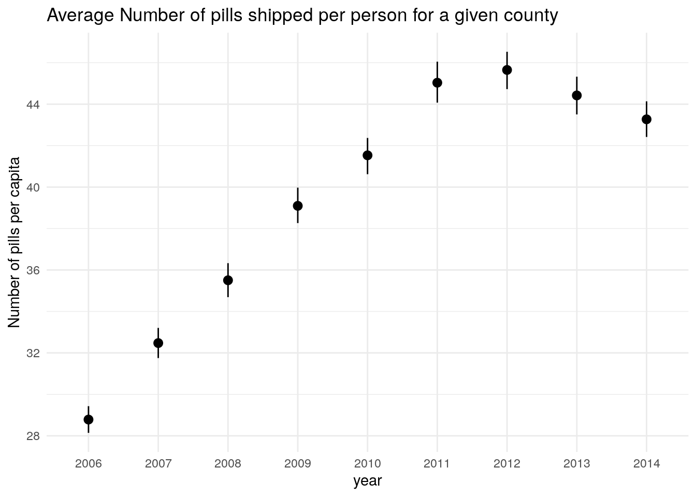
Let’s make a plot comparing this plot with the data on the raw scale
using the patchwork package, using a + to
combine plots together.
We continue to use the theme() function of the
ggplot2 package to remove the previous titles and then use
the plot_annotation() function of the
patchwork package to add an overall title using the
title argument. This function can also be used with the
theme argument and then using the ggplot2
theme() function as usual. This will apply changes to all
plots that are combined but only regarding to the titles plot margin and
background.
raw_average +
theme(axis.text.x = element_text(angle = 90)) +
norm_average +
theme(plot.title = element_blank(), axis.text.x = element_text(angle = 90)) +
patchwork::plot_annotation(title = "Raw vs Normalized Data")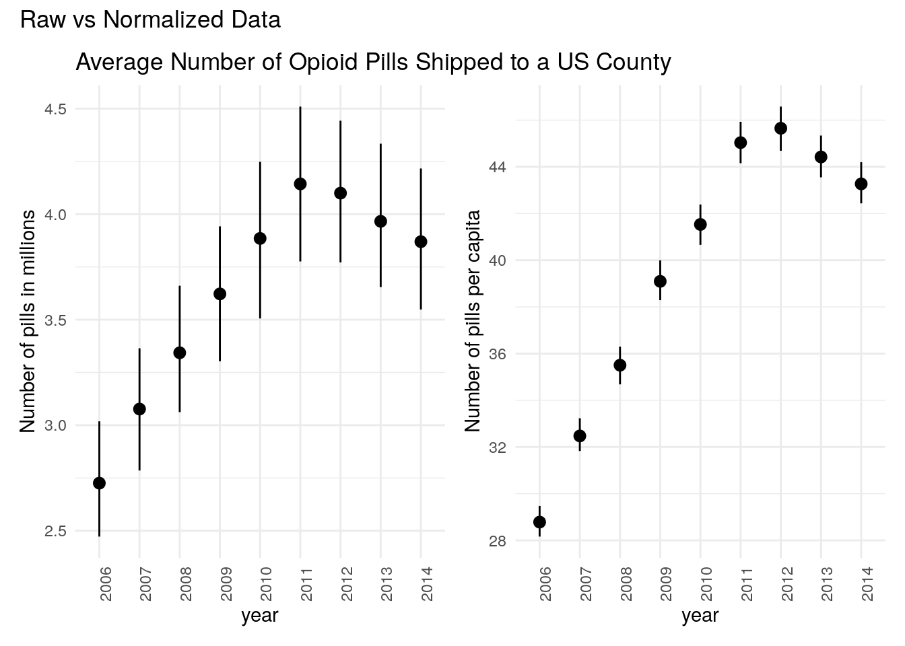
We can see that the variability of the sample mean is much lower for the normalized data (however this is in part because the scale is different), but we see the same general trend from one year to the next.
This is now also a bit easier to interpret. It is easier to think about 30 vs 50 pills per person as opposed to 10 million pills vs 20 million pills for a given county.
Again let’s take a deeper look at the states and create a combined box plot and jitter plot figure.
Question Opportunity
Do you recall how to do this? How would you combine the previous plot of the raw data with this plot?
norm_state_avg <-
Annual %>%
group_by(BUYER_STATE, year) %>%
summarize(mean_DOSAGE = mean(pop_DOSAGE)) %>%
ungroup() %>%
ggplot(aes(x = year, y = mean_DOSAGE, group = year)) +
geom_boxplot(outlier.shape = NA) +
geom_jitter(width = 0.18, alpha = 0.45) +
labs(title = "Average number of opioid pills shipped to a given county for each state",
y = "Number of Pills Per Capita")+
theme_minimal()
norm_state_avg 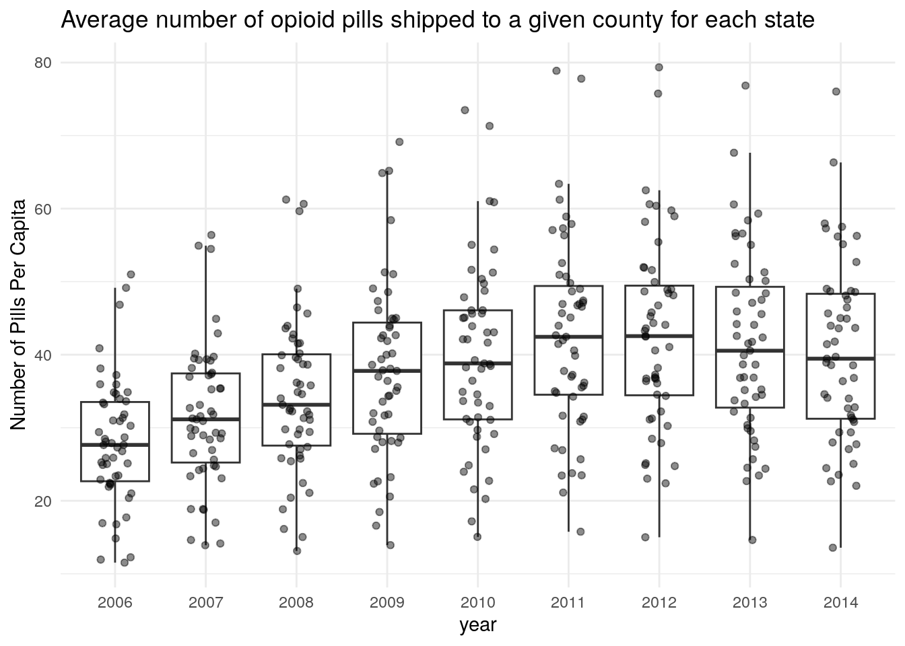
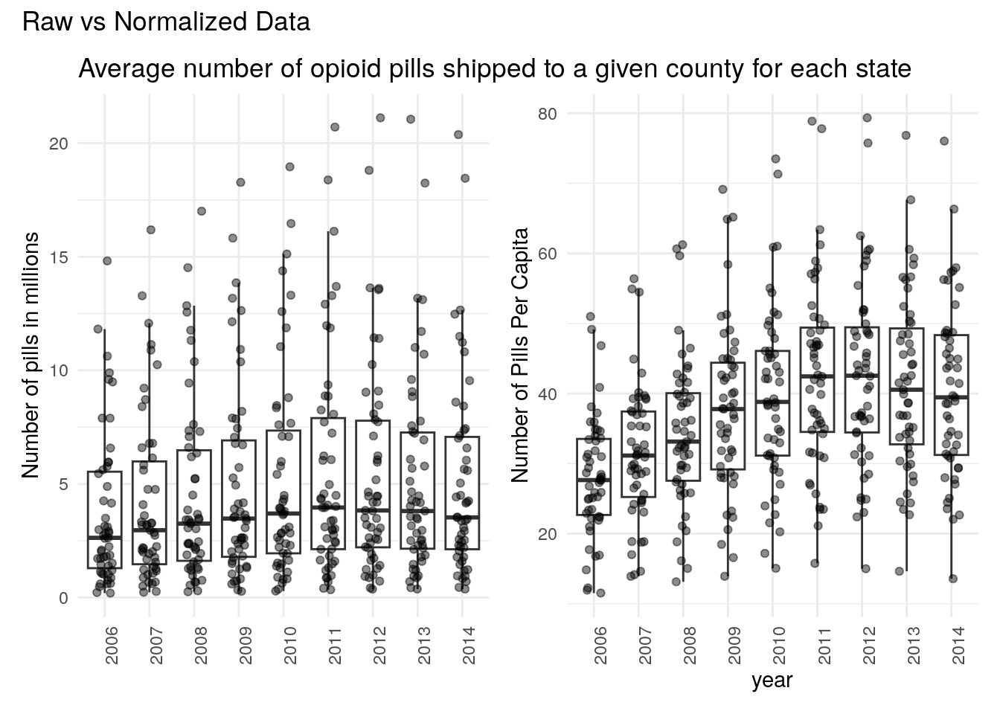
We see a similar spread and the same general trend although the difference from one year to the next appears to be steeper for the normalized data.
Now, let’s see how normalization changes the state specific data.
Question Opportunity
Do you recall how to create the state specific and interactive plot?
g2 <-
Annual %>%
group_by(BUYER_STATE,year) %>%
summarize(mean_DOSAGE = mean(pop_DOSAGE)) %>%
ungroup() %>%
ggplot(aes(x = year, y = mean_DOSAGE, group = BUYER_STATE,
color = BUYER_STATE)) +
geom_line()
g2 <-
g2 + geom_point_interactive(aes(color = BUYER_STATE,
tooltip = usdata::abbr2state(BUYER_STATE)),
size = 2, alpha = 3/10) +
theme(legend.position = "none")This dramatically changed the resulting plot!
We can see that now Tennessee, Kentucky, and West Virginia were among the top to receive pills relative to their populations. California is no longer at the top of the plot.
OK, now that we can make fair comparisons between counties, we can now take a look at the differences between rural and urban counties.
To make this plot we will again use the stat_summary()
function of the ggplot2 package.
We want to include both the raw data and the normalized data in the same plot.
Recall that we can do this using the facet_wrap()
function.
facet_wrap()
In this option we use the labeller argument of the
facet_wrap() function to change what the
strip.text labels will be (which is the text above each
plot - the location of which can be changed).
Annual %>%
pivot_longer(names_to = "type",
values_to = "value",
cols = c(Pills_in_millions,
pop_DOSAGE))%>%
mutate(type = forcats::fct_inorder(type)) %>%
ggplot(aes(y = value, x = year, colour = rural_urban,
group = rural_urban)) +
stat_summary(fun.data = mean_cl_boot,
position = position_dodge(width = 0.5),
geom = "pointrange") +
stat_summary(fun = mean, geom = "line") +
facet_wrap( ~ type, scales = "free", labeller =
as_labeller(c(Pills_in_millions = "Raw Data",
pop_DOSAGE = "Normalized Data (pills per capita)"))) +
labs(title = "Difference in Opioid Shipments With and Without Normalization",
y = "Number of Pills", x = NULL)+
theme_minimal() +
theme(axis.text.x = element_text(angle = 90),
legend.title = element_blank())+
scale_color_manual(values = c("#20A387FF", "#481567FF"))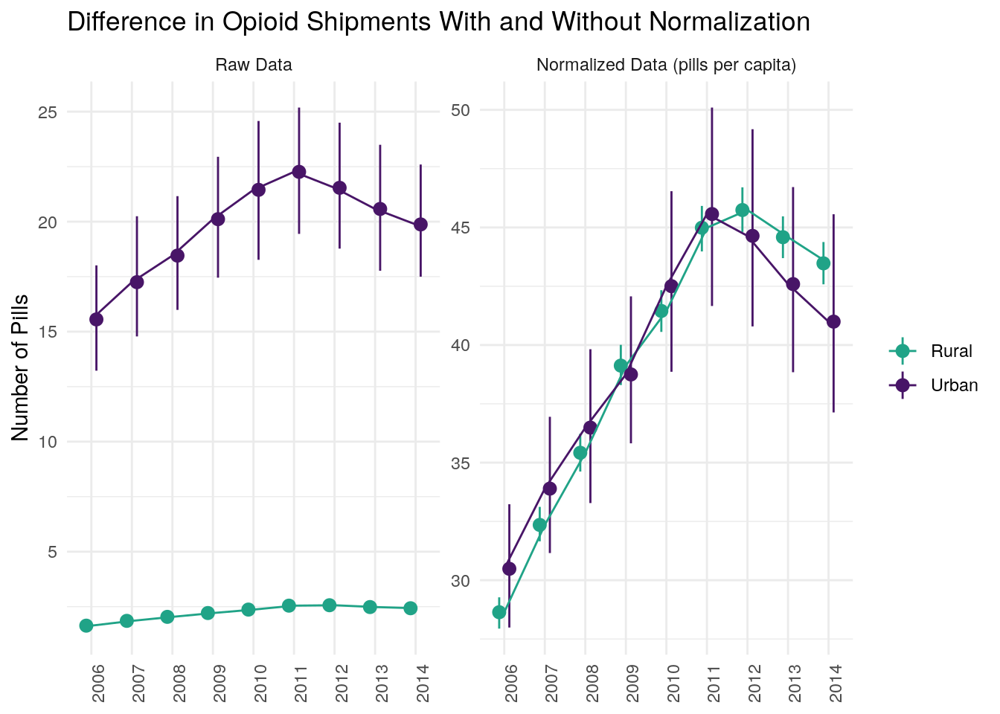
Or, instead we can continue to use patchwork to combine
two different plots. Both options allow for a more flexibility about
specifying different aspects of the plot.
In both cases, we use a manual color scheme to color the two groups
using the scale_color_manual() function of the
ggplot2 package. This function takes a values
argument that must be a list of colors that is equal to the number of
groups to be colored. Also the element_text(hjust = 0.5) of
the theme() function, allows for the titles to be
centered.
Raw_Data <-
Annual %>%
ggplot(aes(y = Pills_in_millions, x = year, colour = rural_urban,
group = rural_urban)) +
stat_summary(fun.data = mean_cl_boot,
position = position_dodge(width = 0.5),
geom = "pointrange") +
stat_summary(fun = mean, geom = "line") +
labs(title = "Raw Data",
y = "Number of Pills in millions",
x = NULL) +
theme_linedraw() +
theme(plot.title = element_text(hjust = 0.5, size = 14, face = "bold"),
axis.text.x = element_text(angle = 90),
axis.text = element_text(size = 10),
legend.title = element_blank(),
legend.position = "none") +
scale_color_manual(values = c("#20A387FF", "#481567FF"))
Norm_Data <-
Annual %>%
ggplot( aes(y = pop_DOSAGE, x = year, colour = rural_urban,
group = rural_urban)) +
stat_summary(fun.data = mean_cl_boot,
position = position_dodge(width = 0.5),
geom = "pointrange") +
stat_summary(fun = mean, geom = "line") +
labs(title = "Normalized Data",
y = "Number of Pills Per Capita",
x = NULL) +
theme_linedraw() +
theme(plot.title = element_text(hjust = 0.5, size = 14, face = "bold"),
axis.text.x = element_text(angle = 90),
axis.text = element_text(size = 10),
legend.title = element_blank()) +
scale_color_manual(values = c("#20A387FF", "#481567FF"))
Raw_Data +
Norm_Data +
plot_annotation(title = "Difference in Opioid Shipments across different types of counties")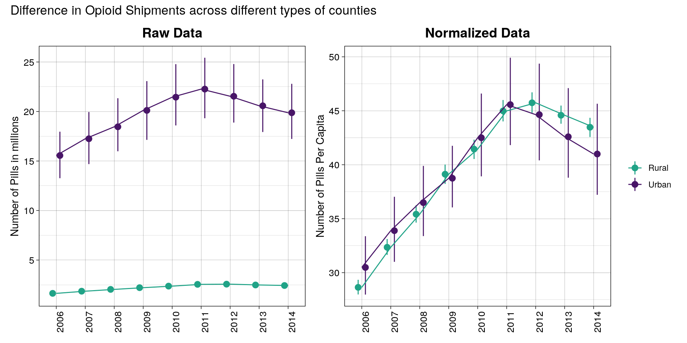
We can see that without accounting for population, the urban counties received many more pills than the rural counties. In contrast, when population is taken into account, the rates appear to be very similar.
We can also see that there appears to be much higher variability among the urban counties as compared to the rural counties.
Let’s save our theme() function code as an actual theme
to be used for our future plots so that they can be stylized
similarly.
theme_county <- function() {
theme_linedraw() +
theme(plot.title = element_text(hjust = 0.5, size = 14, face = "bold"),
axis.text.x = element_text(angle = 90),
axis.text = element_text(size = 10),
legend.title = element_blank())
}Now we simply need to type county_theme() instead to
achieve the same style for our plot.
Recall that the article that surveyed people who use heroin in the Survey of Key Informants’ Patients Program and the Researchers and Participants Interacting Directly (RAPID) program found that:
A much greater percentage of heroin users completing the survey in the SKIP Program reported currently living in small urban or nonurban areas than in large urban areas (75.2% vs 24.8%) at the time of survey completion.
This survey used self-declared area of current residence (large urban, small urban, suburban, or rural).
Given that we saw a large degree of variability among the urban counties, we will now parse this group further to see if examining counties that were either large urban or smaller (including small urban and rural) seems reasonable.
According to the Organization for Economic Co-operation and Development (OECD):
Urban population by city size is determined by population density and commuting patterns; this better reflects the economic function of cities in addition to their administrative boundaries. Urban areas in OECD countries are classified as: large metropolitan areas if they have a population of 1.5 million or more; metropolitan areas if their population is between 500 000 and 1.5 million; medium-size urban areas if their population is between 200 000 and 500 000; and, small urban areas if their population is between 50 000 and 200 000. This indicator is measured as a percentage of the national population.
Thus we could try a cutoff for small urban populations as less than 200,000. Of note this is not as ideal as having commuting patterns etc, however it is a starting point.
According to the Economic Research Service of the US Department of Agriculture (USDA):
Population thresholds used to differentiate rural and urban communities range from 2,500 up to 50,000, depending on the definition.
To also use a population threshold to redefine the rural category (to be consistent with our other definitions of large and small urban populations) we will use a cutoff of less than 50,000.
Now we simply need to type county_theme() instead to
achieve the same style for our plot.
Recall that the article that surveyed people who use heroin in the Survey of Key Informants’ Patients Program and the Researchers and Participants Interacting Directly (RAPID) program found that:
A much greater percentage of heroin users completing the survey in the SKIP Program reported currently living in small urban or nonurban areas than in large urban areas (75.2% vs 24.8%) at the time of survey completion.
This survey used self-declared area of current residence (large urban, small urban, suburban, or rural).
Given that we saw a large degree of variability among the urban counties, we will now parse this group further to see if examining counties that were either large urban or smaller (including small urban and rural) seems reasonable.
According to the Organization for Economic Co-operation and Development (OECD):
Urban population by city size is determined by population density and commuting patterns; this better reflects the economic function of cities in addition to their administrative boundaries. Urban areas in OECD countries are classified as: large metropolitan areas if they have a population of 1.5 million or more; metropolitan areas if their population is between 500 000 and 1.5 million; medium-size urban areas if their population is between 200 000 and 500 000; and, small urban areas if their population is between 50 000 and 200 000. This indicator is measured as a percentage of the national population.
Thus we could try a cutoff for small urban populations as less than 200,000. Of note this is not as ideal as having commuting patterns etc, however it is a starting point.
According to the Economic Research Service of the US department of Agriculture (USDA):
Population thresholds used to differentiate rural and urban communities range from 2,500 up to 50,000, depending on the definition.
To also use a population threshold to redefine the rural category (to be consistent with our other definitions of large and small urban populations) we will use a cutoff of less than 50,000.
So now we will make a new variable with three categories of counties: large urban vs small urban vs rural.
Thus we will use the & operator to indicate that the
small urban category is greater than 50,000 and also less than
200,000.
Annual <- Annual %>%
mutate(category = case_when(population >= 200000 ~ "Large Urban",
population >= 50000 &
population < 200000 ~ "Small Urban",
population < 50000 ~ "Rural"))Let’s take a look at this with our formatted table and plots as before.
Question Opportunity
Do you recall how we might do this?
R_U <-Annual%>%
group_by(year) %>%
count(category) %>%
tidyr::pivot_wider(names_from = category,
values_from = n) %>%
ungroup() %>%
mutate("Rural Change" = Rural - lag(Rural),
"Small Urban Change" = `Small Urban` - lag(`Small Urban`),
"Large Urban Change" = `Large Urban` - lag(`Large Urban`),
"Percent Large Urban" =
round((`Large Urban`/(`Large Urban` + `Small Urban` + Rural))*100, digits = 2)) %>%
rename("Year" = "year")
R_U# A tibble: 9 × 8
Year `Large Urban` Rural `Small Urban` `Rural Change` `Small Urban Change`
<fct> <int> <int> <int> <int> <int>
1 2006 294 2049 661 NA NA
2 2007 299 2038 661 -11 0
3 2008 303 2022 666 -16 5
4 2009 300 2039 653 17 -13
5 2010 302 2024 665 -15 12
6 2011 306 2027 666 3 1
7 2012 312 2030 662 3 -4
8 2013 312 2022 666 -8 4
9 2014 316 2020 665 -2 -1
# ℹ 2 more variables: `Large Urban Change` <int>, `Percent Large Urban` <dbl>| Year | Large Urban | Rural | Small Urban | Rural Change | Small Urban Change | Large Urban Change | Percent Large Urban |
|---|---|---|---|---|---|---|---|
| 2006 | 294 | 2049 | 661 | NA | NA | NA | 9.79 |
| 2007 | 299 | 2038 | 661 | -11 | 0 | 5 | 9.97 |
| 2008 | 303 | 2022 | 666 | -16 | 5 | 4 | 10.13 |
| 2009 | 300 | 2039 | 653 | 17 | -13 | -3 | 10.03 |
| 2010 | 302 | 2024 | 665 | -15 | 12 | 2 | 10.10 |
| 2011 | 306 | 2027 | 666 | 3 | 1 | 4 | 10.20 |
| 2012 | 312 | 2030 | 662 | 3 | -4 | 6 | 10.39 |
| 2013 | 312 | 2022 | 666 | -8 | 4 | 0 | 10.40 |
| 2014 | 316 | 2020 | 665 | -2 | -1 | 4 | 10.53 |
This time when we create our plot we will add labels directly to the
lines of our plot using the directlabels package.
To do this we will use the direct.label() function. This
requires a list of arguments. The dl.trans() function
modifies the location of all labels, while the dl.move()
function can move a specific label to a specified location. Method
options are shown here.
See this case
study and this
case study for more details.
plot_cat_raw <-Annual %>%
ggplot( aes(y = Pills_in_millions, x = year, colour = category, group = category)) +
stat_summary(fun.data = mean_cl_boot,
position=position_dodge(width=0.5)) +
stat_summary(fun = mean,
geom = "line") +
labs(title = "Raw Data",
y = "Pills in millions",
x = NULL)+
theme_county()+
theme(strip.text = element_text(size = 14, face = "bold"))+
scale_color_manual(values = c("#481567FF", "#20A387FF", "#453781FF"))
plot_cat_raw<- directlabels::direct.label(plot_cat_raw,
method = list(dl.trans(y = y +0.5),
"far.from.others.borders",
fontface = 'bold'))
plot_cat_norm <-Annual %>%
ggplot( aes(y = pop_DOSAGE, x = year, colour = category, group = category)) +
stat_summary(fun.data = mean_cl_boot,
position=position_dodge(width=0.5)) +
stat_summary(fun = mean,
geom = "line") +
labs(title = "Normalized Data",
y = "Number of Pills Per Capita",
x = NULL)+
theme_county()+
theme(strip.text = element_text(size = 14, face = "bold"))+
scale_color_manual(values = c("#481567FF", "#20A387FF", "#453781FF"))
plot_cat_norm<- direct.label(plot_cat_norm, method = list(dl.trans(y = y +0.5),
"far.from.others.borders",
fontface = 'bold'))
plot_cat_raw + plot_cat_norm + plot_annotation(title = "Difference in opioid pill shipments between types of counties",
subtitle = "Oxycodone and Hydrocodone pills in the US",)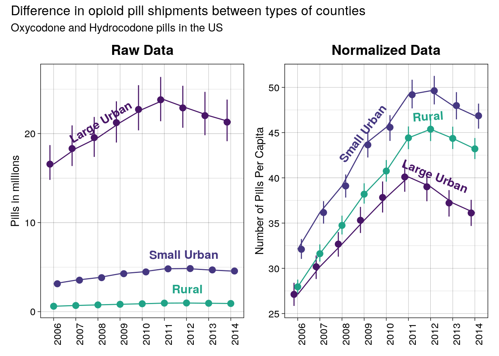
Wow, we can see here that the two urban categories actually have larger differences in normalized pill counts from each other than either has with the rural counties!
Thus it seems reasonable to lump the rural and small urban categories together, rather than grouping large urban and small urban as we were doing.
We will modify our original code with the population thresholds which was:
Annual <- Annual %>%
mutate(category = case_when(population >= 200000 ~ "Large Urban",
population >= 50000 &
population < 200000 ~ "Small Urban",
population < 50000 ~ "Rural"))Now we will just replace the labels for the small urban and rural counties to be the same value “Small Urban or Rural” for this new variable called “large_urban”:
Annual <- Annual %>%
mutate(large_urban = case_when(population >= 200000 ~ "Large Urban",
population >= 50000 &
population < 200000 ~ "Small Urban or Rural",
population < 50000 ~ "Small Urban or Rural"))plot_2cat_raw <- Annual %>%
ggplot( aes(y = Pills_in_millions, x = year,
colour = large_urban, group = large_urban)) +
stat_summary(fun.data = mean_cl_boot,
position=position_dodge(width=0.5)) +
stat_summary(fun = mean,
geom = "line") +
labs(title = "Raw Data",
y = "Pills in Millions",
x = NULL)+
theme_county()+
scale_color_manual(values = c("#481567FF", "#20A387FF"))
plot_2cat_raw <-direct.label(plot_2cat_raw, method = list(dl.trans(y = y +.6),
"far.from.others.borders",
fontface = 'bold',
cex = 0.8))
plot_2cat_norm<-Annual %>%
ggplot( aes(y = pop_DOSAGE, x = year,
colour = large_urban, group = large_urban)) +
stat_summary(fun.data = mean_cl_boot,
position=position_dodge(width=0.5)) +
stat_summary(fun = mean,
geom = "line") +
labs(title = "Normalized Data",
y = "Pills Per Capita",
x = NULL)+
theme_county()+
scale_color_manual(values = c("#481567FF", "#20A387FF"))
plot_2cat_norm <-direct.label(plot_2cat_norm, method = list(dl.trans(y = y +.6),
"far.from.others.borders",
fontface = 'bold',
cex = 0.8))
plot_2cat_raw +plot_2cat_norm + plot_annotation(
title = "Difference in opioid pill shipments between types of counties",
subtitle = "Oxycodone and Hydrocodone pills in the US")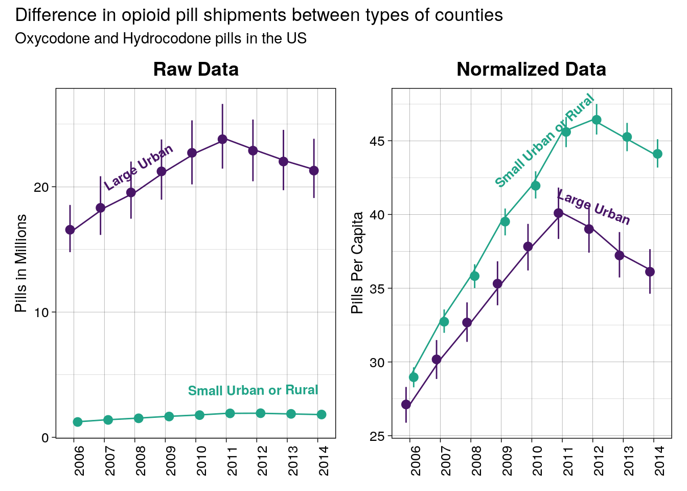
Indeed when we evaluate the data in this way, we see that small urban and rural counties received higher numbers of pills per person than large urban counties.
If you have been following along but stopped, we could load our wrangled data from the “data” directory like so:
load(file = here::here("data", "wrangled", "Annual_opioid_data.rda"))
load(file = here::here("data", "wrangled", "county_info.rda"))First you need to install the OCSdata package:
Then, you may download and load the wrangled data into your R environment using the following code:
wrangled_rda("ocs-bp-opioid-rural-urban", outpath = getwd())
load(file = here::here("OCSdata", "data", "wrangled", "Annual_opioid_data.rda"))
load(file = here::here("OCSdata", "data", "wrangled", "county_info.rda"))If the package does not work for you, alternatively, the RDA files
(stands for R data) of the data can be found in our GitHub
repository. Download these files and then place them in your current
working directory within a subdirectory called “wrangled” within a
subdirectory called “data” to copy and paste our code. We used an
RStudio project and the here
package to navigate to the files more easily.
load(file = here::here("data", "wrangled", "Annual_opioid_data.rda"))
load(file = here::here("data", "wrangled", "county_info.rda"))You can create a project by going to the File menu of RStudio like so:
You can also do so by clicking the project button:
See here
to learn more about using RStudio projects and here to learn more about
the here package.
If you are starting here, we will also perform a few extra steps with the data that we did during the visualization section:
# We create a new variable called `pop_DOSAGE` that is the number of pills shipped per county divided by the population of that county
Annual <- Annual %>% mutate(pop_DOSAGE = DOSAGE_UNIT / population)
# we create a new variable called `Pills_in_millions` that is the number of pills shiped per county divided by 1 million
Annual <- Annual %>%
mutate(Pills_in_millions = DOSAGE_UNIT/1000000)
#We make a new variable based on being either large urban or small urban/rural based off a threshold of population because of our visualizations
Annual <- Annual %>%
mutate(large_urban = case_when(population >= 200000 ~ "Large Urban",
population >= 50000 &
population < 200000 ~ "Small Urban or Rural",
population < 50000 ~ "Small Urban or Rural"))OK, we can tell that there appears to be a difference between small urban and rural counties compared to large urban counties by looking at this plot, however is the difference between these two categories of counties meaningful, or is it just due to random differences from sampling? To evaluate this we may consider employing a statistical test called the Student’s \(t\)-test, which can be used to determine if two group means are different.
Let’s remind ourselves of one of our original questions,
Has there been a difference between opioid pill shipments to rural and urban counties in the US?
In hypothesis testing, we are interested in comparing two different hypotheses: a “null” hypothesis (can be thought of like a baseline e.g. the means between two groups are the same, or there is a difference of 0 between the means of the two groups) compared to an “alternative” hypothesis (e.g. the means between two groups are different). We are going to ask if there is enough evidence in our data to reject the null hypothesis.
Let’s try to formalize this a bit.
Using Student’s t-test, we can test whether the mean number of pills shipped to the rural counties is the same as the mean number of pills shipped to the urban areas. If we call the true unknown population means of the two groups \(\mu_U\) and \(\mu_R\), for the urban and rural areas, respectively, then we can define the null hypothesis that there is no difference in the two means:
\[ H_0: \mu_U = \mu_R \]
In contrast, we also define an alternative hypothesis that there is a difference between the mean number of pills shipped to each type of county:
\[ H_a: \mu_U \neq \mu_R \]
The idea behind a hypothesis test is that we assume the null hypothesis is true and we use our data to help us identify if there is enough evidence to reject the null hypothesis.
This is similar to the idea of assuming that individuals are not guilty until proven otherwise. If there is not enough evidence in the data, then we say we “fail to reject the null hypothesis”.
However, performing this test depends on certain assumptions about our data:
We will start by showing you a tool to assess whether the first assumption seems to be true in our data. We can observe visually whether each group to be tested appears to be normally distributed by making what is called a “quantile-quantile” plot (or Q-Q plot for short). When we talk about a quantile, we are talking about dividing up the distribution of the data into equal portions where roughly the same number of observations fall into each portion. For example, if you divide your data into 100 quantiles, you can think about this as percentiles, but you could also divide your data into 10 quantiles and these would be called deciles.
If our data are normally distributed, then the quantiles of our data points should in some way match the quantiles of a certain normal distribution. A Q-Q plot can allow us to see visually whether this seems to be the case.
Why Q-Q plots? Q-Q plots allow us to compare the quantiles of two distributions to one another. For example, we may want to compare (1) quantiles of a known theoretical distribution (like the normal distribution) to (2) quantiles of the distribution of our data. If the quantiles from these two distributions line up in the plot, then that is a visual piece of evidence that our data have a distribution that is similar to that theoretical distribution (like the normal distribution).
How does this work? To do this we will plot the quantiles of our data on the y-axis and the quantiles of the theoretical normal distribution on the x-axis. If the quantiles line up then we can say that our data is fairly normal. See here for more information about Q-Q plots.
Using the stat_qq() function of the ggplot2
package, we can easily create a Q-Q plot for quantiles from our data
(“sample”) and compare it to the quantiles from a normal distribution,
i.e. using data randomly sampled from a normal distribution
(“theoretical”). The default comparison distribution for these functions
is the normal distribution, so we don’t need to specify it in our code.
Here, we will look at both pop_DOSAGE and
DOSAGE_UNIT values from both types of our urban/rural
categorization, and see what their distributions look like.
Annual %>% pivot_longer(names_to = "type", values_to = "value", cols = c(pop_DOSAGE, DOSAGE_UNIT)) %>%
ggplot(aes(sample = value)) +
stat_qq() +
stat_qq_line() +
facet_wrap(~large_urban + type, scales = "free")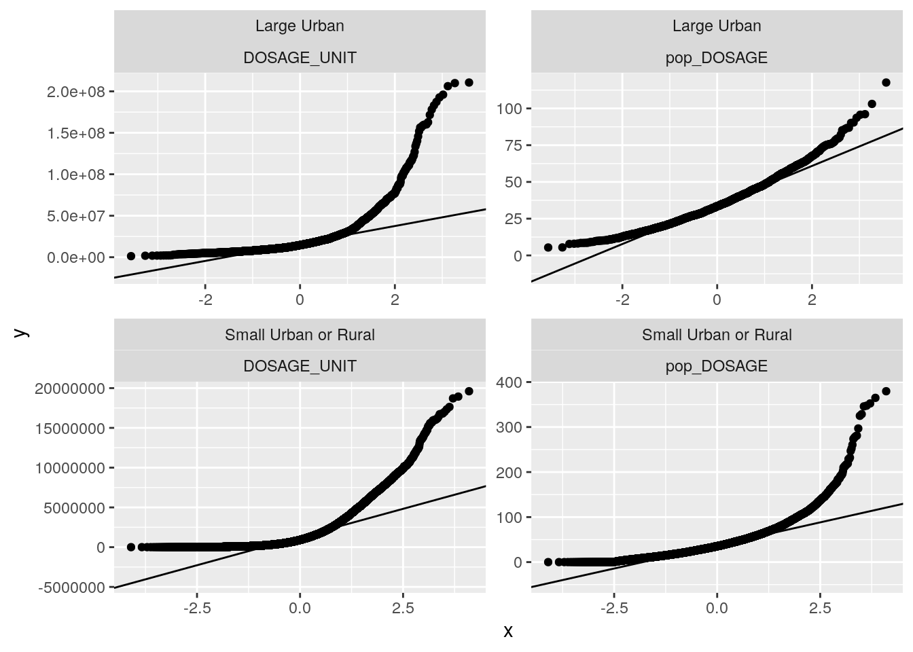
Annual %>% pivot_longer(names_to = "type", values_to = "value", cols = c(pop_DOSAGE, DOSAGE_UNIT)) %>%
ggplot(aes(sample = value)) +
stat_qq() +
stat_qq_line() +
facet_wrap(~rural_urban + type, scales = "free")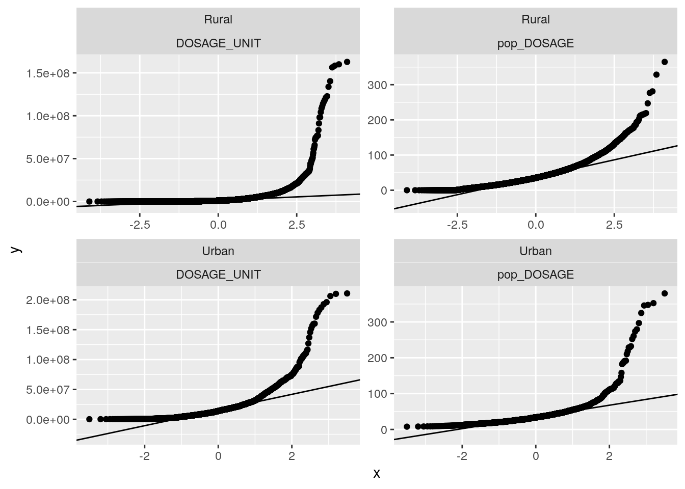
The stat_qq_line() function is used to add a line (with
a particular slope and intercept) to the plot. If the points lie on this
straight line, this is evidence that the data have some normal
distribution, not that the data have a particular normal
distribution.
OK, we can see that in all cases the points appear to deviate from the line for at least one group, indicating that the quantiles are fairly dissimilar between the observed and theoretical data.
Sometimes using a data transformation, like the log transformation, can help make our sample data look more normal. So we can see if we can overcome this observed deviation from normality by transforming the data, taking the log (base \(e\)) of the number of pills or the normalized number of pills.
Annual %>% pivot_longer(names_to = "type", values_to = "value", cols = c(pop_DOSAGE, DOSAGE_UNIT)) %>%
ggplot(aes(sample = log(value))) +
stat_qq() +
stat_qq_line() +
facet_wrap(~large_urban + type, scales = "free")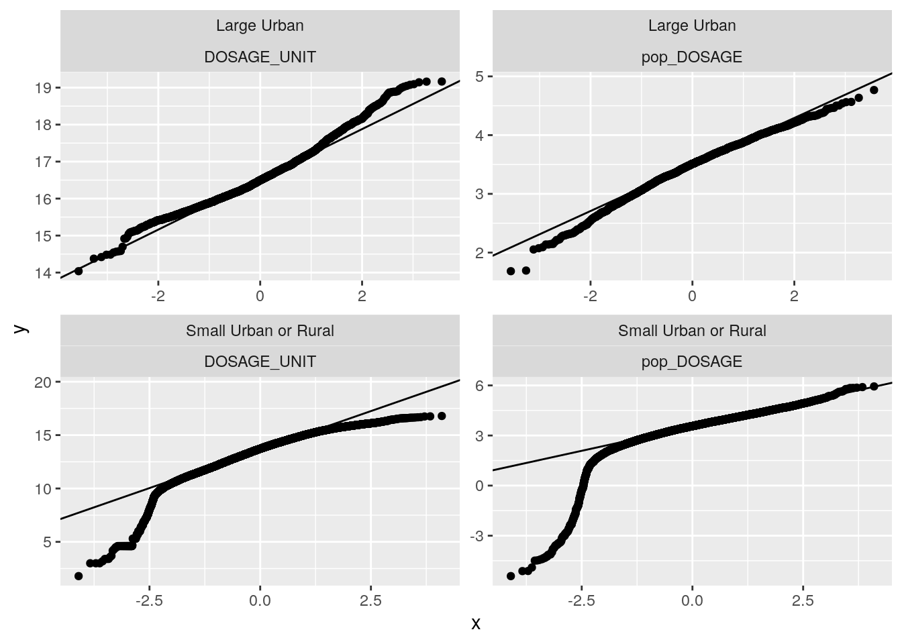
Annual %>% pivot_longer(names_to = "type", values_to = "value", cols = c(pop_DOSAGE, DOSAGE_UNIT)) %>%
ggplot(aes(sample = log(value))) +
stat_qq() +
stat_qq_line() +
facet_wrap(~rural_urban + type, scales = "free")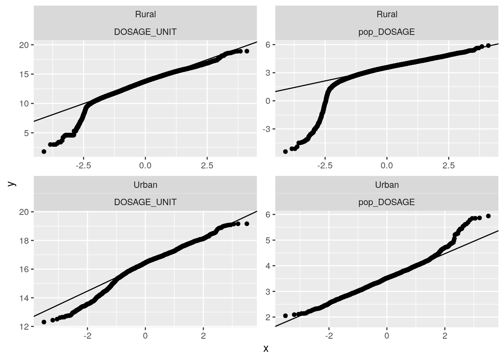
OK, this did not help very much; we can still see large deviations of the points from the lines. So now we have two options. One is that we can continue with the Student’s \(t\)-test because this test is fairly robust to violations of the normality assumption if the sample size is relatively large, due to what is called the central limit theorem, which states that as samples get larger, the sample mean has an approximate normal distribution. Since we are trying to make inference about the population mean by using our sample mean, as long as the sample mean has a normal distribution, it is OK that our data themselves are not normal.
# A tibble: 2 × 2
large_urban n
<chr> <int>
1 Large Urban 2744
2 Small Urban or Rural 24236# A tibble: 2 × 2
rural_urban n
<chr> <int>
1 Rural 24815
2 Urban 2165Our samples are indeed quite large, thus it would probably be reasonable to continue with the \(t\)-test.
However, our second option is to perform a test called the Mann Whitney U test also known as the Wilcoxon rank sum test or the two-sample Wilcox test or the Mann–Whitney–Wilcoxon (MWW) test. Importantly, this test does not rely on the assumption that the data are normally distributed and it is more robust than the t-test to outliers (extreme values compared to the others). Given that the data appears to be quite different from the normal distribution, we will proceed using this test.
In this test, the hypothesis is slightly different. Instead of comparing means, this test evaluates the following null hypothesis for comparing the two groups (adapted from Wikipedia):
the probability that a randomly selected value of the first group (X) is greater than a randomly selected value of the second group (Y) is equal to the probability that a randomly selected value of the second group (Y) is greater than a randomly selected value of the first group (X).
The alternative hypothesis would then be that these probabilities are not equal, i.e., random values of one group are more likely to be larger than random values from the other group.
We can also use what is called a one-sided alternative to test that random values of X are more likely to be greater than random values of Y or that random values of X are less likely to be greater than random values Y, if we are interested in a particular direction of comparison, as we might be here (i.e., we could ask the more specific question of whether opioid shipment rates are higher for rural compared to urban counties).
Another way of describing this null hypothesis is that the distributions of the probabilities of the occurrences of the possible values of X and Y are equal or have a shift of 0. Whereas, the alternative would be that the shift between the probability distributions is not zero. Similarly, the one-sided alternatives are either that the shift in probability distributions is greater than zero or that it is less than zero.
Here you can see an illustration of the null hypothesis on the left and a one-sided alternative hypothesis on the right:
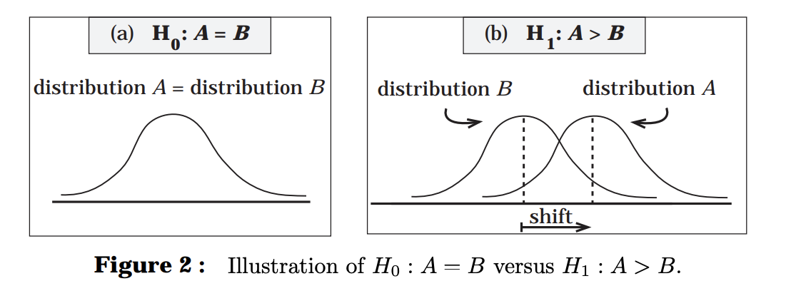
So in our case, using the Wilcox test, we can test the null hypothesis that the following two probabilities are the same: (1) the probability that a random county categorized as rural has a larger number of pills shipped than a random county categorized as urban and (2) the probability that a random county categorized as urban has a larger number of pills shipped than a random county categorized as rural (or similarly comparing small urban and rural counties to large urban counties).
If we call the random counties \(U\) and \(R\), for the urban and rural areas, respectively, then we can define the null hypothesis that there is no difference in the probabilities \(P\):
\[ H_0: P(U > R) = P(R>U) \]
In contrast, we also define an alternative hypothesis that there is a difference (two-sided):
\[ H_a: P(U > R) \neq P(R>U)\]
With a one-sided alternative that a larger number of pills are shipped per person to rural counties as:
\[ H_a: P(R>U) > P(U > R) \] Here the probability that a random rural county had a larger number of pills shipped than a random urban county is greater than the probability that a random urban county had a larger number of pills shipped than a random rural county.
We can extend this to the small urban/rural vs the large rural county comparison.
To implement this test in R we will use the
wilcox.test() function in the stats package.
This function always orders the groups in alphabetical order: X is
automatically the group that comes first alphabetically, while Y is the
group that comes second alphabetically.
Thus for the rural_urban variable, the
**R**ural values would be the X group, while the
**U**rban would be the Y group, as R comes before U in the
alphabet.
For the large_urban variable, the
**L**arge Urban group values would be the X group, while
the **S**mall Urban or Rural values would be the Y
group.
The test statistic for the Wilcoxon test, \(W\), is actually quite simple to calculate manually with small sample sizes.
Let’s say that the US only had 3 counties that were rural and 3 counties that were urban and we wanted to compare the distributions using this test.
The number of pills shipped to each of the 3 rural counties
was:
1) 10
2) 50
3) 30
The number of pills shipped to each of the 3 urban counties
was:
1) 20
2) 25
3) 12
We can calculate our Wilcoxon test statistic in two ways: either using the sum of the ranks of the ordered values from the two groups combined, or the number of “wins” in for each group in all pairwise comparisons of values from the two groups. While this is not obvious, it turns out that these two methods will give the same results.
Using the rank-sum method, the first step is to list the counties in order of the number of pills shipped, labeling them with their group membership. We will use “R” or “U” if the number came from a rural or urban county:
County: R U U U R R
pills: 10 12 20 25 30 40
rank: 1 2 3 4 5 6
sum of ranks \((R_1)\) for R: \(1+ 5 +6 = 12\)
sum of ranks \((R_2)\) for U: \(2+3+4 = 9\)
Now two \(W\) statistics are calculated, one for each group like so (where \(n\) is the sample size for that group):
\[W_1 = R_1-\frac{n_1(n_1+1)}{2}\]
\[W_2 = R_2-\frac{n_2(n_2+1)}{2}\]
Using our example data:
\(W_1\) is for rural counties
\(W_1 =
R_1-\frac{n_1(n_1+1)}{2}\)
\(W_1 = 12 -(3(4)/2) = 12-6 = 6\)
\(W_2\) = U for urban counties
\(W_2 =
R_2-\frac{n_2(n_2+1)}{2}\)
\(W_2 = 9-(3(4)/2) = 9-6 = 3\)
We now want to use these two values to get one overall test statistic for our hypothesis test. It turns out that this test statistic can be defined in different ways. Often \(W\) is defined as follows:
\(W = min(W_1, W_2) = 3\). However, R takes the value \(W_1\) or \(W_2\) for \(W\) depending on what sample is listed first. Thus for this data set, the R output will give the value \(W_1\) for the test statistic in this case.
In our case the first group (rural counties) had a \(W\) of 6.
From the documentation for the stats package for the
wilcox.text() function:
R’s value can also be computed as the number of all pairs (x[i], y[j]) for which y[j] is not greater than x[i], the most common definition of the Mann-Whitney test.
If you are familiar with linear algebra, we can calculate this value
in a clever way in R by getting all the pairwise comparisons of values
between the two groups using the outer() base function and
using the > (instead of the product or *
function as this is typically used by default to get the outer product) to
determine how often the rural counties have a greater value than the
urban counties.
# A tibble: 6 × 2
pills county
<dbl> <chr>
1 10 R
2 12 U
3 20 U
4 25 U
5 30 R
6 40 R [,1] [,2] [,3]
[1,] FALSE FALSE FALSE
[2,] TRUE TRUE TRUE
[3,] TRUE TRUE TRUE# 10 is less than 12, 20, and 25 (R is always less than U for all 3 comparisons)
# 30 is greater than 12, 20, and 25 (3 times that R is greater than U)
# 40 is greather than 12, 20, and 25 ( 3 tiems that R is greater than U)
# 3+3 = 6 pairs out of 9 where R was greater than U thus W is equal to 6
sum(outer(R,U, ">"))[1] 6
Wilcoxon rank sum exact test
data: pills by county
W = 6, p-value = 0.35
alternative hypothesis: true location shift is greater than 0We can also see that if we switch the order of our counties (i.e., we make the values that were for urban now the values for rural) we then get the \(W\) for what was previously our second group in the result. (Remember whatever is alphabetically first will be the first group - so again the results are for “R”.)
# A tibble: 6 × 2
pills county
<dbl> <chr>
1 10 U
2 12 R
3 20 R
4 25 R
5 30 U
6 40 U
Wilcoxon rank sum exact test
data: pills by county
W = 3, p-value = 0.8
alternative hypothesis: true location shift is greater than 0For small samples, the statistic \(W\) can then be compared to a critical \(W\) table (note here that what we refer to as \(W\) is called \(U\) in the table) to determine significance. If \(W\) is lower than the critical value, it suggests that the null hypothesis should be rejected. From this table we see that our example has so few values that the null can’t be reliably rejected.
For larger samples (like our actual data, or in general at least 20 per group) the \(W\) statistic is instead used to calculate a \(Z\) statistic like so:
\[Z = \frac{W-\mu_W}{\sigma_W}\]
Where \(\mu_W\) is the expected \(W\) if the two groups have identical distributions and \(\sigma_W\) is the standard deviation.
They are calculated as follows:
\[\mu_W = \frac{n_1n_2}{2}\]
\[\sigma_W = \sqrt{\frac{n_1n_2(n_1+n_2+1)}{12}}\] This can then be used in a \(Z\) table or using a calculator to determine a \(p\)-value.
Here is also a link to a video for a more detailed explanation about calculating this by hand.
Now, to implement this test in R we can use the
wilcox.test() function of the stats
package.
We need to specify that we want to look for differences of normalized
pill counts (pop_DOSAGE) between the
rural_urban groups. We can do so by using the
~ to indicate the dependent variable on the left and the
independent variable on the right. We assume that the number of
normalized pills depends on the county group, thus the normalized pill
count is the dependent variable. These data are independent; the formula
interface to wilcox.test() is the unpaired form, so no
paired argument is needed. We would have paired data, for
example, if we had comparable rural and urban counties for every state;
that is not the case here. See this
case study for an example of the paired version of this test. We
will use the alternative = argument to specify that we
expect the first of the groups by alphabet (which would be
Rural of the rural_urban variable) to have
greater values than the Urban group by setting it to
“greater”. Thus we will also use the alternative = "less"
argument for the large_urban group comparison as we expect
the first group (alphabetically) Large Urban to have
smaller values than the Small Urban or Rural group.
wilcox.test(pop_DOSAGE ~ rural_urban, data = Annual,
alternative = "greater",
conf.int = TRUE,
estimate = TRUE)
Wilcoxon rank sum test with continuity correction
data: pop_DOSAGE by rural_urban
W = 27731707, p-value = 0.00618
alternative hypothesis: true location shift is greater than 0
95 percent confidence interval:
0.3459493 Inf
sample estimates:
difference in location
1.00955 wilcox.test(pop_DOSAGE ~ large_urban, data = Annual,
alternative = "less",
conf.int = TRUE,
estimate = TRUE)
Wilcoxon rank sum test with continuity correction
data: pop_DOSAGE by large_urban
W = 31010485, p-value = 3.393e-09
alternative hypothesis: true location shift is less than 0
95 percent confidence interval:
-Inf -1.429283
sample estimates:
difference in location
-1.999459 Both results have \(p\) values that are less than 0.05, which is the threshold commonly used in hypothesis testing to determine if there is enough evidence to reject the null hypothesis.
In both cases this indicates that indeed there is enough evidence,
and we can reject the null hypothesis. Furthermore, the confidence
interval does not overlap zero for either test, suggesting that the
Rural group is larger for the first test (as both
confidence interval limits are positive) and that the
Large Rural group is smaller for the second test (as both
confidence interval limits are negative).
For the second test, the absolute value of the difference estimate is
larger than that of the first test suggesting that there is a larger
difference between the Large Urban and
Small Urban or Rural groups than the Rural and
Urban groups.
If we had not normalized the data, what would our results look like?
wilcox.test(DOSAGE_UNIT ~ rural_urban, data = Annual,
alternative = "greater",
conf.int = TRUE,
estimate = TRUE)
Wilcoxon rank sum test with continuity correction
data: DOSAGE_UNIT by rural_urban
W = 4153441, p-value = 1
alternative hypothesis: true location shift is greater than 0
95 percent confidence interval:
-12298340 Inf
sample estimates:
difference in location
-11884730 wilcox.test(DOSAGE_UNIT ~ large_urban, data = Annual,
alternative = "less",
conf.int = TRUE,
estimate = TRUE)
Wilcoxon rank sum test with continuity correction
data: DOSAGE_UNIT by large_urban
W = 65792794, p-value = 1
alternative hypothesis: true location shift is less than 0
95 percent confidence interval:
-Inf 13268551
sample estimates:
difference in location
13013868 Using the raw data, we see that there is no difference between the rural and urban categories, and the rural data actually show lower values than the urban (based on the sign of the estimated difference). Similarly, there is no difference between small urban and rural counties vs. large urban counties. In this case the large urban counties (the first group alphabetically) also had larger values (based on the sign of the estimated difference).
Notice that in both of these tests the confidence interval overlaps zero, while this is not the case for the previous tests. When the confidence interval overlaps zero that indicates that there is the possibility that the two populations have in fact no difference.
The main conclusion here is that we can see very different results depending on how we define the data and how we normalize the data!
Now, let’s create a plot that summarizes our main findings.
We will use some of our plots from the Data Visualization section,
including Raw_Data, Norm_Data and
plot_cat_norm, and create a multi-panel figure, where each
plot is connected to the next with an arrow.
To make these arrow connectors, we will create a plot that is just a
single arrow using geom_segment() function of
ggplot2. We are doing this because we want to create a
layout where the different panels are joined by arrows.
Creating this arrow requires the following arguments : 1) x: x coordinate of starting point of the arrow 2) y: y coordinate of starting point of the arrow 3) xend: x coordinate of end point of the arrow 4) yend: y coordinate of end point if the arrow
(Note: You can make a straight arrow using geom_curve()
with the same arguments.)
Also, since ggplot requires a data input, we will create
a dummy data.frame to create the y axis value for the
arrow. We will use the aes() function to define the length
and location of the arrow.
We need to use the arrow argument with the
arrow() function to create an arrow. The
lineend and linejoin arguments specify what
styles to use. The size() function specifies how thick the
arrow is displayed.
See here for different arrow style options.
Then we will use the xlim() function of the
ggplot2 package to specify the overall size of the plot
relative to the arrow.
y
1 1arrowplot<-ggplot(arrow_df, aes(x = .5, y = 1, xend = .7, yend = 1)) +
geom_segment(arrow = arrow(),
lineend = "butt",
linejoin = "mitre",
size = 3)+
xlim(0.5, 0.75)
arrowplot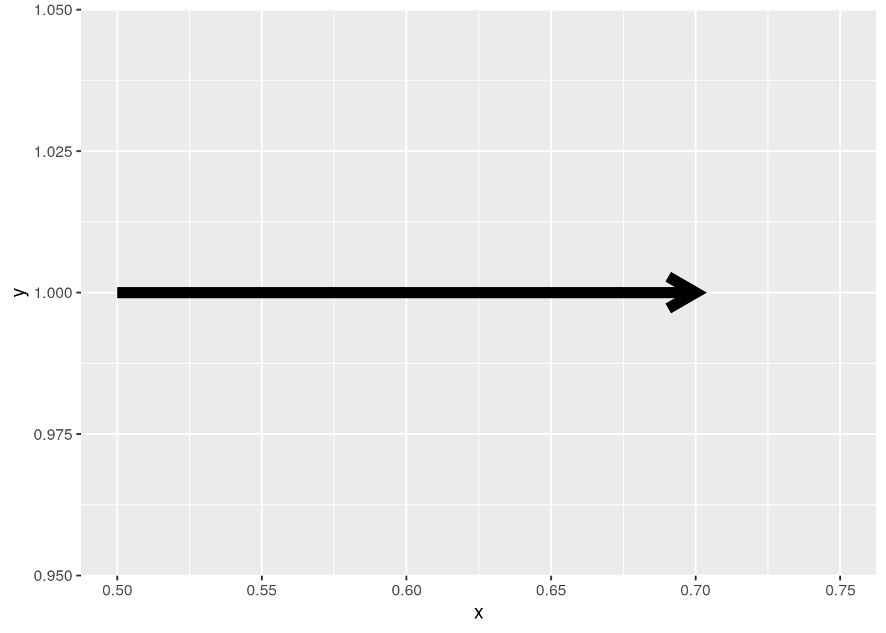
Then we will use theme_void() remove the background.
We can move the legend to the plot area using the
legend.justification and legend.position
arguments of the theme() function. The relative position on
the plot area needs to be specified like so c(x,y). Thus
c(0.7,0.2) is about 70% across the x axis from right to
left and about 20% up from the x axis.
Finally, we can build our three panel plot with the arrow connectors as follows:
main_plot <- Raw_Data +
theme(legend.justification = c(0.7,0.2),
legend.position = c(0.7,.2)) +
arrowplot +
Norm_Data +
theme(legend.justification = c(0.7,0.1),
legend.position = c(0.7,.1)) +
arrowplot +
plot_cat_norm +
labs(title = "Normalized &\nStratified Data") +
plot_layout( nrow = 1, widths = c(5,1.3,5,1.3,5))+
#theme(title = element_text(hjust = 0.5)) +
plot_annotation(title = "Opioid pill shipments to different types of counties in the US", subtitle = "How we normalize opioid (oxycodone and hydrocone) pill shipment data and how we stratify by different \ntypes of counties can yield very different pictures about shipments") &
theme(plot.title = element_text(size = 18, face = "bold" ),
plot.subtitle = element_text(size = 14))Now we can see the steps that we went through, from our raw data through to our normalized an stratified data, and how our choices impacted the apparent relationship between county classification and number of pills.
png
2 In this case study we evaluated the number of oxycodone and hydrocodone pills shipped to pharmacies and practitioners at the county-level around the United States (US) from 2006 to 2014. This data comes form the Automated Reports and Consolidated Ordering System (ARCOS) of the DEA and was released by the Washington Post. We compared counties based on the level of urbanicity using the fact that previous research suggests that regions of the country that are more rural may have communities that were more vulnerable to opioid abuse than those of large urban areas due to likely higher prescription rates for opioid pills in the time period that we evaluated.
Our results also suggest that this is the case, as we identified higher numbers of opioid pill shipments to counties that were more rural and less urban. However we learned that how regions are defined and how the data are normalized can have a great impact on the results of such comparisons. Furthermore, other factors may be involved in creating a situation that may leave members of communities more vulnerable to drug abuse and addiction, such as socioeconomic factors. Further research is necessary to better understand why the opioid crisis became such a problem in the US and particularly to better understand what current populations are particularly vulnerable and why.
Note: Monthly data is also available within the data
directory. This could be used for time series analysis.
RStudio
Cheatsheet on RStudio IDE
Other RStudio cheatsheets
RStudio
projects
application programming
interface (API)
JavaScript
Object Notation (JSON)
Lightweight
programming languages
ggplot2 package
Please see this case
study for more details on using ggplot2
grammar of graphics
ggplot2 themes
Normalization
Mann–Whitney–Wilcoxon
(MWW) test also known as the Wilcoxon rank sum test or the
two-sample Wilcox test
Also see here for more information about this test and here for a video for a more detailed explanation about performing this test by hand.
Outliers
Normal
distribution Q-Q
plots Student’s
\(t\)-test
Confidence
interval
Sampling
distribution
Bootstrapping
Resampling
Motivating report for this case study
Also see this article which surveyed people who use heroin in the Survey of Key Informants’ Patients Program and the Researchers and Participants Interacting Directly (RAPID) program.
The source data for this case study are documented at the ARCOS API; a snapshot is included with this project for reproducible builds.
This data is from the DEA Automated Reports and Consolidated Ordering System (ARCOS) and was released by the Washington Post.
A wrapper package about this API is available here.
| Package | Use in this case study |
|---|---|
| readxl | to import an excel file |
| httr | to retrieve data from an API |
| tibble | to create tibbles (the tidyverse version of dataframes) |
| jsonlite | to parse json files |
| stringr | to manipulate character strings within the data (subset and detect parts of strings) |
| dplyr | to filter, subset, join, and modify and summarize the data |
| tidyr | to change the shape or format of tibbles to wide and long |
| naniar | to get a sense of missing data |
| ggplot2 | to create plots |
| formattable | to create a formatted table |
| forcats | to reorder factor for plot |
| ggpol | to create plots that are have jitter and half boxplots |
| ggiraph | to create interactive plots |
| patchwork | to combine plots |
| directlabels | to add labels directly on lines within plots |
| usdata | to add full state names to plots based on the state abbreviations |
Interested in exploring more open case studies? Visit opencasestudies.org to access additional studies and open educational resources.
RStudio
Cheatsheet on RStudio IDE
Other RStudio cheatsheets
RStudio
projects Tidyverse
application programming
interface (API)
JavaScript
Object Notation (JSON)
Lightweight
programming languages
ggplot2 package
Please see this case
study for more details on using ggplot2
grammar of graphics
ggplot2 themes
Normalization
Mann–Whitney–Wilcoxon
(MWW) test also known as the Wilcoxon rank sum test or the
two-sample Wilcox test
Also see here for more information about this test and here for a video for a more detailed explanation about performing this test by hand.
Outliers
Normal
distribution Q-Q
plots Student’s
\(t\)-test
Confidence
interval
Sampling
distribution
Bootstrapping
Resampling
Motivating report for this case study
Also see this article which surveyed people who use heroin in the Survey of Key Informants’ Patients Program and the Researchers and Participants Interacting Directly (RAPID) program.
The source data for this case study are documented at the ARCOS API; a snapshot is included with this project for reproducible builds.
This data is from the DEA Automated Reports and Consolidated Ordering System (ARCOS) and was released by the Washington Post.
A wrapper package about this API is available here.
Packages used in this case study:
| Package | Use in this case study |
|---|---|
| readxl | to import an excel file |
| httr | to retrieve data from an API |
| tibble | to create tibbles (the tidyverse version of dataframes) |
| jsonlite | to parse json files |
| stringr | to manipulate character strings within the data (subset and detect parts of strings) |
| dplyr | to filter, subset, join, and modify and summarize the data |
| tidyr | to change the shape or format of tibbles to wide and long |
| naniar | to get a sense of missing data |
| ggplot2 | to create plots |
| formattable | to create a formatted table |
| forcats | to reorder factor for plot |
| ggpol | to create plots that are have jitter and half boxplots |
| ggiraph | to create interactive plots |
| patchwork | to combine plots |
| directlabels | to add labels directly on lines within plots |
| usdata | to add full state names to plots based on the state abbreviations |
If you or a loved one is struggling with opioid addiction, contact the SAMHSA’s National Helpline at 1-800-662-HELP (4357).
It is a free, confidential, 24/7, 365-day-a-year treatment referral and information service (in English and Spanish) for individuals and families facing mental and/or substance use disorders.
You can also contact the Addiction Center at (877)871-3575 which also has a confidential 24/7 live chat at: https://www.addictioncenter.com/drugs/overdose/.
According to their website:
Remember, that being able to treat an overdose at home is not a replacement for a hospital. Even if the moment has passed, and the victim seems fine, there is still a chance that something is going on that cannot be seen by the human eye. Taking the victim to the hospital, can mean the difference between life and death.
Overdose is a scary word. We often associate it with death, but the two are not always connected. Life can go on after an overdose, but only if the person suffering understands and learns from it. Getting on the road to recovery is not easily done but it is always possible, and the only guaranteed way to never suffer an overdose again. If you don’t know where this path begins, or need help getting help for a loved one, please reach out to a dedicated treatment provider. They’re here, 24/7, to answer any questions you may have. Be it for yourself or someone else.
According to harmreduction.org, the following are signs of an overdose:
If someone is making unfamiliar sounds while “sleeping” it is worth trying to wake him or her up. Many loved ones of users think a person was snoring, when in fact the person was overdosing. These situations are a missed opportunity to intervene and save a life.
Sometimes it can be difficult to tell if a person is just very high, or experiencing an overdose. If you’re having a hard time telling the difference, it is best to treat the situation like an overdose – it could save someone’s life.
The most important thing is to act right away!

R version 4.3.2 (2023-10-31)
Platform: x86_64-pc-linux-gnu (64-bit)
Running under: Ubuntu 22.04.4 LTS
Matrix products: default
BLAS: /usr/lib/x86_64-linux-gnu/openblas-pthread/libblas.so.3
LAPACK: /usr/lib/x86_64-linux-gnu/openblas-pthread/libopenblasp-r0.3.20.so; LAPACK version 3.10.0
locale:
[1] LC_CTYPE=en_US.UTF-8 LC_NUMERIC=C
[3] LC_TIME=en_US.UTF-8 LC_COLLATE=en_US.UTF-8
[5] LC_MONETARY=en_US.UTF-8 LC_MESSAGES=en_US.UTF-8
[7] LC_PAPER=en_US.UTF-8 LC_NAME=C
[9] LC_ADDRESS=C LC_TELEPHONE=C
[11] LC_MEASUREMENT=en_US.UTF-8 LC_IDENTIFICATION=C
time zone: Etc/UTC
tzcode source: system (glibc)
attached base packages:
[1] stats graphics grDevices utils datasets methods base
other attached packages:
[1] OCSdata_1.0.2 usdata_0.3.1 directlabels_2026.8.27
[4] patchwork_1.3.2 ggiraph_0.9.6 Hmisc_5.3-0
[7] forcats_1.0.0 formattable_0.2.1 ggplot2_4.0.3
[10] naniar_1.1.0 tidyr_1.3.1 dplyr_1.1.4
[13] stringr_1.5.1 jsonlite_2.0.0 httr_1.4.7
[16] tibble_3.3.0 readxl_1.4.3 readr_2.1.5
[19] here_1.0.2
loaded via a namespace (and not attached):
[1] tidyselect_1.2.0 farver_2.1.1 S7_0.2.2
[4] fastmap_1.1.1 fontquiver_0.2.1 digest_0.6.34
[7] rpart_4.1.21 lifecycle_1.0.4 cluster_2.1.4
[10] ellipsis_0.3.2 magrittr_2.0.3 compiler_4.3.2
[13] rlang_1.1.6 sass_0.4.8 tools_4.3.2
[16] utf8_1.2.4 yaml_2.3.12 data.table_1.15.0
[19] knitr_1.50 labeling_0.4.3 htmlwidgets_1.6.4
[22] RColorBrewer_1.1-3 withr_3.0.2 foreign_0.8-85
[25] purrr_1.0.2 nnet_7.3-19 grid_4.3.2
[28] fansi_1.0.6 gdtools_0.5.1 colorspace_2.1-0
[31] scales_1.4.0 MASS_7.3-60 cli_3.6.5
[34] rmarkdown_2.25 generics_0.1.3 rstudioapi_0.15.0
[37] tzdb_0.4.0 cachem_1.0.8 splines_4.3.2
[40] cellranger_1.1.0 base64enc_0.1-3 vctrs_0.6.5
[43] Matrix_1.6-1.1 fontBitstreamVera_0.1.1 hms_1.1.3
[46] visdat_0.6.1 Formula_1.2-6 htmlTable_2.5.0
[49] systemfonts_1.3.2 jquerylib_0.1.4 glue_1.7.0
[52] stringi_1.8.3 gtable_0.3.6 pillar_1.9.0
[55] htmltools_0.5.7 R6_2.6.1 rprojroot_2.1.1
[58] evaluate_1.0.5 lattice_0.21-9 backports_1.4.1
[61] fontLiberation_0.1.0 bslib_0.6.1 Rcpp_1.1.2
[64] gridExtra_2.3.1 nlme_3.1-163 checkmate_2.3.4
[67] mgcv_1.9-0 xfun_0.55 fs_1.6.3
[70] usethis_2.2.3 pkgconfig_2.0.3 Estimate of RMarkdown Compilation Time:
About 242 - 252 secondsThis compilation time was measured on a PC machine operating on Windows 10. This range should only be used as an estimate as compilation time will vary with different machines and operating systems.
We would like to acknowledge Brendan Saloner for assisting in framing the major direction of the case study.
We would like to acknowledge Michael Breshock for his
contributions to this case study and developing the OCSdata
package.
We would also like to acknowledge the Bloomberg American Health Initiative for funding this work.


![[source]](https://en.wikipedia.org/wiki/File:Opium_pod_cut_to_demonstrate_fluid_extraction1.jpg){kind=link}
![[source]](https://www.cdc.gov/drugoverdose/images/epidemic/2018-3-Wave-Lines-Mortality.png){kind=link}
![[source]](https://github.com/gadenbuie/tidyexplain/blob/master/images/inner-join.gif){kind=link}
![[source]](https://github.com/gadenbuie/tidyexplain/blob/master/images/left-join.gif){kind=link}
![[source]](https://github.com/gadenbuie/tidyexplain/blob/master/images/right-join.gif){kind=link}
![[source]](https://github.com/gadenbuie/tidyexplain/blob/master/images/full-join.gif){kind=link}